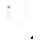
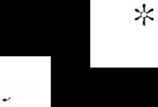
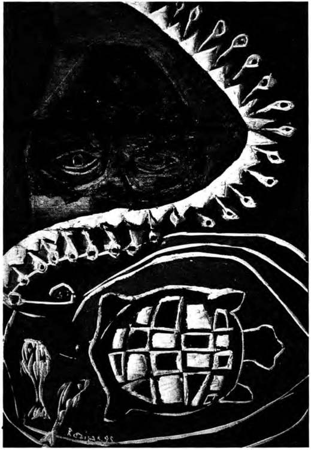
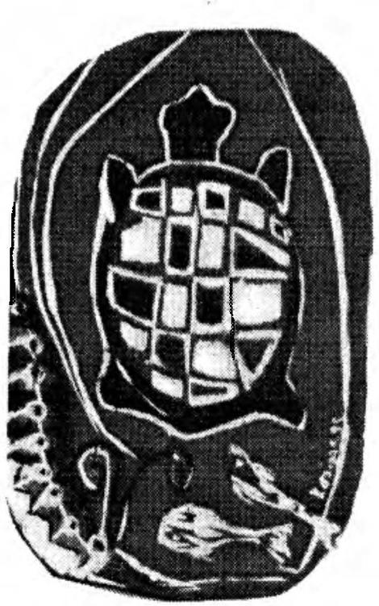
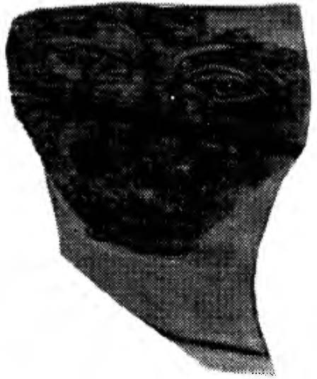

Lyd i a titri yordu. O d a ben i m l e konuşmaya ç a l ı ş ıyordu
ama ağzınd a geveledi k lerini duyamıyordum.
Herkesi köprüden uzak laştırd ı m . O köprü hakk ında bildiklerimizi b i r araya geti rebilirsek, iç inde bulunduğumuz aç
ı ııazı belk i anlayab i l i ri z diye düşünüyordu m .
Köprüden b irkaç metre ötede yere oturduk. Çevrede çok
sayıda insan dolaşıyord u , ama kimsen i n b i ze ald ı rdığı yoktu .

1 1 2
ÖTEKİ BENLİK
"Silvio Manuel kim, Gorda?" diye sordum.
"Bu adı bugüne kadar hiç duymamıştım," dedi. "Bu adamı tanımıyorum, ama onu biliyorum. Adını duyduğumda
dalga dalga bir şeyler vuruyor.bilincime. Josefina evde oldu
ğumuz sırada onun adını söyledi bana. O andan itibaren, tıpkı Josefina gibi benim de zihnime, dilimin ucuna sözler takılmaya başladı. Günün birinde Josefina' ya benzeyeceğim hiç aklıma gelmezdi. "
"Neden Silvio M anuel ' in karanlığın kendisi olduğunu
söyledin?" diye sordum.
"Hiçbir fikrim yok," dedi. "Yine de burada bulunan herkes bunun doğru olduğunu biliyor."
La Gorda kadınları konuşmaya zorladı . Hiçbiri tek bir
söz söylemediler. Ben Rosa' ya döndüm. Üç dört kez bir �ey
söylemek ister gibi davranmıştı. Onu bizleri bekletip durmakla suçl adım. Ufak tefek bedeni kasıldı.
"Köprüyü geçtik ve Silvio Manuel bizi köprünün diğer
yakasında bekliyordu," dedi zor işitilir bir sesle. "Ben en arkadaydım. Diğerlerini parç al adığında onların çığlıkları nı
duydum. Kaçmak istedim ama iblis Silvio Manuel köprünün
iki ucunu da tutmuştu. Kaçacak yer yoktu."
L a Garda, Lydia ve Josefina, Rosa' nın anlattıklarını
onayladılar. Onlara bunun yalnızca kapıldıkları bir duygu
mu, yoksa gerçekten yaşadıkları bir olayın anbean anımsanı
şı mı olduğunu sordum. La Garda kendi açısından olayın tıpkı Rosa'nın açıkladığı gibi, anbean bir anımsayış biçiminde
gerçekleştiğini söyledi. Diğer iki kadın da onunla hemfikirdiler.
Yüksek sesle, köpr!lnün çevresinde yaşayan insanlara
neler olabileceğini düşündüm. Eğer kadınlar Rosa'nın belirttiği gibi bağırdılarsa, çevreden gelip geçenlerin mutlaka onl arı duymuş olmal arı gerekirdi; çığlıklar ortalığı birbirine katmış olurdu. Bir an için, tüm kentin gizli bir komplo içinde
bulunduğunu hissettim. Tüm bedenim ürperdi. Nestor 'a döndüm ve korkumu tüm boyutlarıyla açık açık anlattım ona.
ÖFKELİ B İ R B Ü Y Ü CÜ O R D U S LJ
1 1 3
N es tor, N agu al J uan M at us' la Genaro · nun gerçekten üs
!lin b irer sava�çı olduk l a rı n ı ve bundan dolay ı d a m ü nzev i
b i r ya�am sürdürd ü k l er in i söyled i . İnsanl a rl a b i re b i r i l i � k i
k u ruyorlardı . T ü m kent i n , lıatta köprü n ü n c iv a rı nda yaşayan
i nsanları n o n l arla g i z l i bir rn1l a � ın a i ç i nde b u l u nmaları o lanaksızd ı . Nestor ' u n söyled i ğine göre böyle b i r şeyin o l ab i lmesi için, tüm bu i nsanla rı n b i rer savaşçı o l m aları gere k i yordu k i , bu da çok u fak b i r olas ı l ı k t ı .
Josefina çevremde dolaşmaya, küçümser b i r bakı ş l a ben i
tepeden tırnağa süzmeye başlad ı .
"Gerçekten çok küstah l ı k ed i yors u n . · · ded i . " B i zzat kendin burada olmana rağmen h i ç b i r şey b i l ıı1 i yorın u ş g i b i davran ı yors u n . B izi sen get i rd i n bur<ı y a ! B i z i zorl a bu kiiprüye sen s ürükled i n ! "
Kadın ların bak ı s l a rı nda tehd i t k fı r b i r i fade be l i rd i . Y ı r-
,
dım ister g i b i Nestor ' a bakt ı m .
" H iç b i r şey anımsamıyonı m . " ded i . " B urası bana ü rkünt li veri yor, tek b i l d i ğ i m bu."
Nestoı" a dönmek, ben i m oldukça i ş i me ge l m i ş t i . Kadınlar bu kez ona yük lendi ler.
"Elbette a n ım s ı yors u n " d iye bağ ı rd ı J osefina. " H e p i m i z
madayd ı k . N e sal<ık şeys i n sen ! "
Soru larım i ç i n rahat b i r ortam gerek iyord u . O n l a rı köp
ıiiden uzak l aş t ı rd ı m . H areket etıneyi terc i h eden k i ş i le rd i , bu
l\L'den le de onl arı n da ben i m g i b i s o ru n l arı oturmak yeri ne
.t'.L'Zi nerek tart ı ş m a y ı clalı a d i n le n d i r i c i b u l ac a k la r1 11 1 d ü ş ün
ı li i ın .
Yürü meye baş l ad ı ğ ı m ı zda kad ı n l a rı n öfkeleri başladığı
ı•ibi çabucak kayboldu. Lydi a ' y l <ı Jose l ina daha d a konuşkan
1 1ldul ar. Defalarca, S il v io M anuel ' i n i nsanda korku uyandı rd ı ğ 1 111 b e l i rt t i l er. B un u n l a b i r l i k te h iç b i r i beden s e l b i r ac ı ı lı ı yınuş ol dukları n ı anımsamı yorlard ı : tek a n ı m s ad ı k l arı kork ııdan d i z le r i n i n bağ ı n ı ıı çözü l d i.i ğ i.i y d i.i . Ros<ı t e k b i r söz
·. ı ıy lcmiyor, ama jestleriyle d i ğerl e r i n i n söyled i k l e r i n i onayl ı v ordu. O n lara , köprüyü gece mi geçmeye ç a l ı ş t ı k l ar ı n ı s or-

1 1 4
ÖTEKİ BENLİK
dum. Lydi a ' yla Josefina gündüz olduğunu söylediler. Rosa
boğazını temizledi ve gece olduğunu fısıldadı. La Gorda olayın alacakaranlıkta, güneş doğarken ya da doğmasına yakın
bir zamanda yaşandığını belirterek bu tutarsızlığı açıklığa
kavuşturdu.
Kısa bir sokağın sonuna ulaştık ve gayri ihtiyari köprü
yönüne doğru geri döndük.
"Bu yalınlığın ta kendisi," dedi birdenbire La Gorda,
sanki o anda aklına gelmiş gibi. "Paralel çizgileri aşıyorduk,
ya da daha doğrusu, Silvio Manuel bizim paralel çizgileri aşmamızı sağlıyordu. O köprü bir erk noktası , bu dünya üzerinde bir delik, diğerine açılan bir kapıydı. Ve biz bunu geçiyorduk. B u noktayı geçmek bizlere acı vermiş olmalı, çünkü bedenim korkuyor. S ilvio Manuel bizleri köprünün diğer yakasında bekliyordu. Yüzünü h içbirimiz anımsayamaz, çünkü
Silvio Manuel karanlığın kendisidir ve yüzünü asla göstermez. Yalnızca onun gözlerin i görebiliriz."
"Tek bir göz," dedi Rosa sessizce ve uzaklara baktı.
"Burada bulunan herkes, sen de dahil olmak üzere," dedi La Gorda bana bakarak, "Silvio Manuel ' in yüzünün karanlıkta olduğunu biliyor. Kişi ancak onun sesini işitebil ir, yumuşak, öksürük gibi bir ses."
La Gorda konuşmasını kesti ve beni dikkatle incelemeye
başladı. Bakışları rahatsız etti beni. Gözlerinde ihtiyatlı b ir
ifade vardı. B ildiği bir şeyi gizlediği duygusuna kapıldım.
Ona bunu sordum. Beni yalanladı, ama nedensiz birtakım
duygulara kapıldığını kabul etti . Israr ettim ve kadmlardan
köprünün öte yakasında olup bitenleri anımsamalarını istedim. Kadınların tek anımsadıkları, diğerlerinin çığlıklarını
duyduklarıydı.
Genarolar tartışmalara katılmadılar. Nestor 'a olup bitenler hakkında herhangi bir bilgisinin bulunup bulunmadığını
sordum. Ciddi bir sesle tüm bu olanların onun kavrayı� yeteneğin i n ötesinde olduğunu söyledi.
Onları köprüye geri g i tmeye ve toplu halde köprüyü

ÖFK E Lİ BİR BÜYÜCÜ ORDUSU
1 1 5
gL·çıneye zorladı m . Adam lar bu öneri y i hcıııen k a b u l e t t i ler,
;ıına k ad ın l ar kar�ı ç ı k tı l ar. A k l ı ma gelen i li m gerekçeleri sayıp döktükten sonra, en sonunda Lycl ia, Rosa ve Josc l"i ı ı a ' y ı
İ l e kaka yürümeye razı e t t i m . La Garda isteksizdi a m a köprüyü geçme dli�i.i nce s i yine de onu cezbed i yordu . Kad ı n l ar l a
lıirl ikte, b a n a herhangi b i r yard ım d a bu l u ııııı adan yli rli ıııeye
lıa � l ad ı , Genaro l ar d a o n u n l a b i r l i kle: k li ç ü k k ı z kardqleri
ıurla y li rü tmc çabalarıma s i n i r l i s i ni rl i g ü l üyorl ard ı . a ı na ba
ı ıa yard ı m c ı o l m ak i ç i n parm a k l arı n ı d a h i k ı p ı rdatmad ı l a r.
Daha önce durduğumuz ye re k adar y ü rü d ü k . B i rde n b i re kendimi üç kadını bir a rada tuı amayacak kadar güçsüz h i sset t i m .
Yardı m etme s i i ç i n l a Gorcl a ' ya seslen d i m . İ s t ek s i z b i r b i
': i mde Lyd i a ' y ı t u t m ay a ç a l ı � ı ı ğ ı s ı r;ıda g ru p d a ğ ı l d ı ve l a
< lorda d ı � ı ııda hepsi oradan uzakl a�aı«tk koca a d ı m l arla, nel cs nefese kendilerini sokağa att ı la r. La Gorda ve ben, köprü
VL' yapı�ın ı � g i b i k ı p ı rdamadan o l d u ğ u m u z yerde k a l a k a l d ı k .
ıl eriye g i dem iyor, g e r i çek i l ı ı ıck zoru nda k a l d ı ğ ı m ı z i ç i n de
kendi ken d i m i ze ö1keleniyord u k .
L a Go rcla k u l ağ ı m a e ğ i l e re k k o r k m a m a m gere k t i ğ i n i ,
1,_· linkü gerçe kte köprünün diğer yak a s ı nd a o n l a rı bek leyen i n
l ıen olduğumu fı s ı ldadı . Benim S i l v io M an ue l ' i n yard ı m c ı s ı
ı ı l d u ğ u m u b i l d i ğ i n i , a m a b u n u o n l ara aç ı k Lt rn a y a c e s a ret
L·deıned i ğ i m i ele ekled i .
O anda b i r ö fke dal gası beden i m i sars t ı . L a Gorda ' n ı n
l ıu t ü r yoru m l arda b u l u n maya. böyle d u y g u l ara k ap ı l m aya
l ı iç hakk111 ı n o l m ad ı ğ ın ı dli�ündüm. Onu saçl arı ndan y a ka l a
ı l ı rn ve beden i n i b ü k l ü m . Ö fkeden ç ı l d ı rm a k üzereyken ken
ı l iıne gelebi l d i m ve durd u m . Özür d i l ey1:Te k onu k u c a k l ad ı m .
S : ı k i n olmam gere k t i ğ i n i dli�üııdüm. O n a , l ider konum u nda
l ı u lunın am ı n s i n i rleri m i bozmaya b a � l ad ı ğ ı n ı .�öy l e d i m : i le rkdi kçe gerg i n l i ği m g i derek daha da y o ğ u n l a � ı yord u . B an a k : ı ı ı lmadı ğ ı nı söy l e d i . I srarla, S i lv i o M anuel ' l c ben i m b i rbi
ı ı ı ı ı ize son derece yakm olduğum uzu . ve efe n d i m bana h a l ı rl ; ı l ı l ınca, b u n a öfkel i b i r ıepki gö,qerd i ğ i m i be l i ri l i . B e ıı i rn ı • ı ı1.et i m i 11 1 a l t ı n a veri l m i � olduğu için �aıı s l ı o l d u ğ u n u : yok-

l 1 6
ÖTEKİ BENLİK
sa, onu köprüden aşağı atabileceğimi söyledi.
Geri döndük. D iğerleri sağ salim köprüden uzaklaşnı ış.
korkulu gözlerle bize bakıyorlardı. Zamanın durduğunu h issettim. Ortalıkta hiç kimse görünmüyordu. Köprü üzerinde
neredeyse beş dakikaya yakın bir süre durmamıza rağmen ne
köprüden geçen ne ele ortalıkta gezinen tek bir kişi bile görünmemi�ti. S onra birdenbire günün yoğun bir saatinde herhangi bir işlek yolda karşılaşabileceğimiz biçimde çevremizi insanlar sardı.
Tek bir kelime konuşmadan, şeh ir meydanına döndük.
Tehlikeli biçimde zayıftık. Kentte biraz daha kalmak konıısunda hafif bir istek duyuyordum, ama arabayla doğuya, Atlantik kıyısına doğru yol aldık. Nestor'la ben sırayla direks iyona geçiyorduk. Vcracruz'a kadar yolda yalnızca yemek yemek ve benzin almak için durduk. Veracruz, bizler için tarafsız bölgeydi. La Gorda böyle bilmedikleri bir şehrin eski giysilerinden kurtulmak için uygun bir yer olduğunu söyledi.
B i r otele yerleştik ve orada eski giysilerini çıbrtarak parçaladılar. Yeni bir şeh i rde bulunmanın verdiği heyecan, moralleri ve kendilerini iyi hissetmeleri açısın dan çok yararl ı oldu.
B i r sonraki durağımız Mex ico City oldu. Bir zamanlar
don Juan 'la birl ikte kaldığımız A laıneda Parkı yakınlarında
bir otele yerleştik. İki gün boyunca tam birer tur ist gibi yaş<ıdık. Olabildiğince çok sayıda turistik yer gezdik. Kadınlar
tek kelimeyle ba�döndürücü görünüyorlardı. Benigno bir rehin dükkanından fotoğraf makinesi satın aldı. Makineye film
koymadan dört yüz y irmi beş fotoğra f çekti. B ir yerde duvarlardaki mozaikleri hayranlıkla seyrederken, yanıma gelen
bir güvenlik görevl i s i bana bu harika görünüşlü yabancı bayanların hangi ülkeden geldiklerini sordu. Beni turist rehberi
sanmıştı. Sri Lanka' dan geldiklerini söyledim. Söylediğime
inandı ve Meksikalılara bu kadar benzemeleri ne hayret etti.
Ertesi gün saat onda, don Juan ' ın ben i bir zamanlar içeri
ittiği hav ayolu bürosuna gittik. Beni iti�iyle havayolu büro-
Öf'KELi B İR B Ü Y Ü C Ü O R D U S U
1 1 7
.\t t n u n b i r k a p ı s ı n d an g irm i � cl iğeri ııden ç ı kın ı � t ı ın . Ancak d ı
şarı ç ı kt ı ğ ı m d a kend i m i , olın ;ıın gereken yerde, a rka sokakta
değil , en az iki k i l om etre ötede b i r pazar meyda n ı nda b u l
ı ı ı u � , çevremdek i i ns a n l arı seyre d a l ı n ı şt ı m .
L a Gor cl a , lrnvayo l u b ü ros u n u n ela, köprü g i b i , b i r e rk
ııokt a s ı , bir para l e l ç iz g i den d iğerine geç i l e n b i r kapı o ld u ğu
ııu d ü ş ü n d ü ğ ü n ü s öy l e d i . Yo ru m u n a g ö re N ag u a l b e n i o
;ıç ı k l ıktan içeri i t m i ş t i ama ben i k i d ü n y;ı ara s ı n cLı . i k i parakl ç i z g i aras ı n da s ı k ı ş ı p k a l m ı şt ı m : b u n e de n l e ele pazar ıııeycl a n ı n claki h areket l i l iğ i , onun b i r parçası o l ı ıı ;ı d a n seyret
ıııeye koy u l m u ştum. N agual ' ı n ben i iterek öte yaka y a geçir
ı ııeyi amaç l ad ı ğ ı nı , ama ben i m i stenc i m i n onun bu g i ri ş i m i n i
enge ll e d i ğ i ni v e sonuçta ben i m d e ge l d i ğ i ı ı ı \'. i zg i d e , b u ct li ııyada kal d ı ğ ı m ı söyled i .
Havay o l u b ürosunda n pazar y e r i n e . o radan d;ı d o n J u
; ı n ' l a benim büro d a k i geç i rd i ğ i m cleney i m clen soıır;ı birl i k t e
l lturduğuımız A l ameda Park ı ' n a yürü d ü k . D o n .J ııaıı ' l a b i rl iki L' b i rçok kez o parka g i t m i ş t i k . '\J e l cr y;ı p m a m ı z gere k t i ğ i n i L ı rt ı �a b i lmem i z i ç i ı ı e ı ı uyguıı yerin orası o l d u ğ u n a i na n ıyordum.
B u l u n d u ğ u m u z yerin e rk i n i n buııcl a ı ı sonr a k i acl ı m ı n ı ız ı n
ı ı c o l m a s ı g e rek t i ğ i k o n u s u n d a b i r k a r;ır v e reb i l m e s i i ç i n
vaptıkl anm ı z ı gözden ge�· i rı ne y i a m aç l ı yo rd u m . K öp r ü y ü
)'.eçmek kon u s u ndak i y o ğ u n çabamızdan s o n r a , yol a rLıdaşl a rı ın ı bir grup hal i nde b i r arada t u t a b i l ı n e n i ıı bir y o l u n u clü
�Linrneye ç a l ı ş m ı ş , a m a b u n d a başarı l ı o l a m a m aırn � t ı ı n . Önli
ı ı ıüze çıkan taş basamakl arın üzerine ot u rd u k ve konuşırnıına
iıL'n iın iç i n b i l g i lerin sözcü lerle ayrı l m az b i r b Li t ü n l ü k o l u �
ı ı ırduğuna d u y d u ğ u m i n anc ı d i le get i rm e k l e ba�lacl ı ı ı ı . O n l a
ı ; ı , b i r o l ay ya da deney i m i n b i r k a v ram bi�' i ın i nde sözlere
ı li inü�türül rned ikçe, s i l in ip y itmeye m a h k u m o l d u ğ u n u aç ık
Lı d ı m ; b u neden l e de d u nıımıımız hakk ı nd a tek tek b i r değcrk ı ı d i rmede b u l u n m a l a rı n ı i s i yord u ın .
İ l k söz a lan Pablito o l d u . B u nu o l d u k ç a t u h a f b u l d u m ,
1.. ı i ı ıkü ş u a n a değin o l ağan üstü ses s i z k a l m ı şt ı . Özür d i l eye-

1 1 8
ÖTEKİ BENLİK
rek söyleyeceklerinin, herhangi bir anımsamadan ya da bir
duygudan kaynaklanmadığını, yalnızca bildiklerinden çıkardığı bir sonuçtan ibaret olduğumu belirtti. Kadınların köprüde olup bitenler hakkında söylediklerinin kendisi için anla
şılmaz bir yanı yokmuş. Pablito ' ya göre bu, köprünün sağ
yakası olan tona/dan, sol yakası olan naguala doğru olan çekimle ilgiliymiş. Burada herkesi korkutan, bir başkasının denetimi ele geçirmesi ve bu geçiş için onları zorlamasıymış.
O sırada S ilvio Manuel 'e yardım edenin ben olduğunu kabullenmesi de zor değilmiş. Benim daha iki gün önce aynı
şeyi yaptığımı, köprüde herkesi iteklcdiğimi gördüğünü de
bunun kanıtı olarak belirtti. Ancak o gün, bana yardım edebilecek hiç kimse, onları köprünün öte yakasına çekmek üzere
bir Silvio Manuel yokmuş.
Konuyu değiştirmeye çalıştım ve onlara, bizim deneyimlediğimi türdeki unutma vakalarına amnezi adı verildiğini anlatmaya koyuldum. Amnezi üzerine bilgilerim, durumumuzu aydııılatacak ölçüde değildi, ama beni sanki bir emir veril mişçesine bir şeyi unutabilmenin olanaklı olmadığına
inandırabilecek ölçüde sağlamdı . Onlara birinin, olasılıkla
don Juan' ın , bizlerin şu anda anımsama gücümüzle ulaşamadığımız bir şeyler yapmış olması gerektiğini söyledim. Bumm ne olduğunu tam olarak ortaya çıkartmaya çalışıyordum.
Pablito benim, Sivio Manuel ' le gizli bir anlaşma içinde
bulunan kişinin ben olup olmadığımı çıkartabilmemin çok
öneml i olduğu konusunda ı srar ediyordu . B u noktada,
Lydia'yl a Josefina'nın paralel çizgileri geçmek konusunda
onları zorlayarak üstlendiğim rolden kendisine söz ettiklerini
belirtti. Bu konuyu tartışmak beni oldukça rahatsız etti. Dona Soledad 'l a konuştuğum güne değin paralel çizgileri hiç
duymadığımı söyledim; ama, bu düşünceyi derhal benimsemek konusunda da herhangi bir tedirginlik hissetmemiştim.
Onlara, bir anda zihnimde bir ışığın çaktığını ve birden onun
neden söz ettiğini kavrayıverdiğimi söyledim. Onu anımsadığım an, bu paralel çizgileri kendimin de geçtiğim düşünce-
ÖFKELİ B İ R B Ü Y Ü C Ü ORDU S U
1 l l)
s i ne b i l e inandım. L a Gorda d ı � ı n d a hep s i , para l e l ç i zg i leri
i l k kez ben onl ara söz etti ğ imde d u y m u ş l a rd ı . La Gorda ' ysa
para l e l ç izgi leri, b enden çok kısa b i r s ü re önce doiia S oledad ' dan öğrenmiş.
Pab lito, S il v io M anucl ' l e aramdaki i l i ş k iden söz etmeyi
dened i . Onu enge l l ed i m . H e p i m iz i n köprüde d i ğer yakaya
geçmek üzere u ğraşt ı ğ ı m ı z s ı rada k e nd i m i n-ve o l as ı l ı k l a
d a hepimizi n-o lağan olmayan b i r gerçek l ik d u ru m u na g i rd i ğ i m izin ayrı m ın a o anda varamadı ğ ı m ı söyled im . B u deği
ş i m i n ayrı m ın a ama köprüde b i zden başka k i m se n i n bulunmad ı ğ ı n ı fark edince v arab i l m iş t i m . Orada yaln ı zca biz, sek i z i m iz bu l u nu yord u k . G ü nq l i b i r g ü n d ü , ama b i rd e n b i re gökyüzü b u l u tlanm ı � , saba h ı n o rta s ı n d a parlayan gün ı ş ı ğ ı
alacakara n l ı ğ a dönüşmüştü. B e n kendi kork u l a rı m v e k i ş isel
yoru m l arı m a ö y l e s i ne göm ü l m ü ş o l m ;ı l ı y ı m k i , bu ürküntü
verici değ i ş i m i başta fark edeme m i ş t i m . Geriye döııdüğürni.i zde, d i ğe r insanların etra fta d o l aş t ı k l a r ı n ı görd ü m . Pek i ,
b i z köprü yü geçmeye ç a l ı ş ı rken neredey d i b u imanl ar?
La Gorda ve ötek i ler h iç b i r şey fark etmem i ş lerdi-ger
çekte onlara anlatmam dan önce herhang i b i r değ i � i k l i ğ i n ayr ı m ı n a v a rın aırn ş l a rd ı . Hepsi b i rden h u z u r s u z l u k ve k orku
karı ş ı m ı bir i fadeye y üzüme bak t ı l ar. Pab l i to y i ne at ı l d ı ve
be n i yapmak i stemed i k l e ri b i r şey i �· i ı ı o n l a r ı zor l am ak l a
s uç l ad ı . B u n u n n e olduğunu söy l e m i yord u , ama sözleri n i n
altında yatan i ma d iğerler i n i n de onu desteklemeleri i ç i n yeterl i oldu. B irdenb i re önümde öfkel i bir biiyücü grubu o l u şmuştu. Onlara , köprüde yaşad ı ğ ı m ı z ve bizi içine alan böylesine tuhaf bir dene y i m i her açıdan i ncelemek zoru n d a oldu
ğumu açı k layab il m e k h ay l i zam anı m ı aldı. En sonunda sak i n l eşebi l d i ler, ama bunun neden i , ;ın latt ı k l arı m a i nanma larından çok, duygusal açıdan yoru l ırnı� o l ın a l arı yd ı . La Gorda d a dah i l olmak ü zere tümü de, � idetle Pabl i to ' dan yanayd ı l ar.
Nestor farkl ı bir açıdan yak l a�t ı . Ben i m , o l as ı l ı k l a kendi
eylemleri n i n kapsamı nı n tam olara k ayrı m ı n da o l mayan gö-
1 20
ÖTEKİ BENLİK
nülsüz bir temsilci olduğumu öne sürdü. Diğerleri gibi benim onları yanlış yola sürüklemek üzere görevlendirilmiş olduğuma inanam ıyormuş. Onları bilerek yıkıma doğru sürüklediğimin farkında olmadığımı h issediyorımış, ama yaptı
ğım, tam olarak buymuş. Ona göre paralel çizgileri aşmanın
iki yolu varmış, bu yollardan biri, kişinin bu çizgileri bir
başkasının, d iğeriyse, kendi erk iyle aşabilmesiymiş. S ilvio
M anuel, p aralel çizgileri geçmelerini sağlamak için onları
öylesine korkutmuş ki, bazıları bunu yaptıklarını bile anımsamıyorlarmış. Onlara düşen görev, kendi güçleriyle köprüyü aşabilmekmiş; benim görevimse, onlara engel olmak.
Daha sonra sözü B en igno alarak, don J uan ' ın erkek çömezlerine yaptığı son şeyin, kendimizi bir uçuruma atmamızı sağlayarak paralel ç izgileri geçmemize yardımcı olmak olduğunu söyledi. Benigno, köprüyü geçme konusunda daha ş imdiden bir hayli bilgiye sahip olduğumuzu, ama bunu bir
kez daha başarmak için doğru zamanm henüz gelmediğine
inanıyordu. Köprüde ileri doğru bir adım daha atamamışlardı , çünkü henüz bunun zamanı gelmemiş. Bu nedenle de,
karşıya geçirmeye zorlamakla onları yok etmeye çal ıştığımı
düşünmekte haklılarmış. Düşüncesine göre, kes in bir bilinç
durumunda çizgi leri aşmak, atacakları son adım anlamına
gelecekmiş ve böyle bir adım ancak yeryüzünden yok olmaya hazır olduklarında gerçekleşebilecekmiş.
Daha sonra Lydia geldi karşıma. Herhangi bir değerlendirmede bulunmadı ama, efelenerek, onu ilk kez köprüye nasıl sürüklediğimi anımsamamı istedi. Kaba bir biçimde benim N agual Juan M atus 'un değil, Silvio Manucl 'in çömezi olduğumu; Silvio M anucl' le benim b irbirimizin bedenlerimize girdiğimizi söyledi.
La Gorda'yla köprü de yaşadığıma benzeyen bir öfke
krizine daha kapıldım. Kendime tam zamanında hakim oldum. Sakin olmalıydım. Kendi kendime defalarca beni anal izlerin ilgilendirdiğini söyledim.
Lydia'ya, bana bu şekilde sataşmanın yararsız olduğunu
ÖFKELİ B İ R B Ü YÜCÜ O R D U S U
1 2 1
bel i rt t i m . Susmak b i l m iyord u . S i l v i o :vLı nuel ' i n ben i nı d endim olduğunu, bu nedenle de ben i ıı ı o n l a r ı n bir parçası o l amayacağ ı m ı söy ledi bağırarak. Rosa ona kat ı l arak, olduğum her şeyi bana S i l v io Manul.' l ' i n verd i ğ i n i söy led i .
Ros a ' ya doğru sözc ükleri kul l a n d ı ğ ı ııdan e nı i n o l u p o l mad ı ğ ı nı sordum . On:ı . sah i p oldıığuııı h e r � e y i S i l v i o Maııuel ' in verdiğ i n i söylem i ş o l nıası gerek t i ğ i ı ı i söy l ed i ııı. K u l l andığı sözcü k lerin doğru olduğunu öne s ü rd ü . B ;ıııa olduğum her şeyi S i l v i o M aııuel verııı iş. La Gor da b i l e ona deste k l e yerek c iddi b i ç i m d e h;ıstala ııcl ı ğ ı ııı , t ü ııı gücümtiıı tükend i ğ i .
i ç i m d e k i her şe y i n e r i y i p g i t t i ğ i b i r z a m a n ı a n ı m s ad ı ğ ı n ı
söy led i; iştt o zaman. S i l v io M anuel d ur u m a ıııtid;ıhale e t n ı i ş
ve bedenime yen i bir yaş:ıııı poıı ı p a l a ı ıı ı ş . L ı Corda ' y a giire ,
sonuçlarla uğraşacağıma.gerçek köken l erim i b i l nıem i n daha
yerinde o l u rm u ş . Ona göre , bugüne değ i n bana yard ı m eden
k i ş i n i n Nagual J uan M atus olduğu varsay ı m ı ndan yararlan
ın ı ş ı m . Nagual ü zerinde .sab i t lq nı e m i n nede n i ı ı i n o n u n sözcükl ere duvdufru d ü s k ü n l ü k m ü s . Öte vall(bıı S i l v i o \ıJanue l ,
.r
..__
s
.':ı
_,·
sess i z karan l ı k m ı ş . Onun i 1. i ndcn g itmek i ç i n para l e l ç i zg i le-
ri aşmam gereki yorm u ş . Oysa N agual J uan \1<ıt us ' uıı i 1. i n den giclcbi lme ı ı ı i ç i n yapmanı gerekrn tek ş e y o n u ı ı hakk ı n da konu � nı aknı ı ş.
Siizleri ben im i ç i ı ı saçı ııal ıklan iite lı i\· b i r a n l aııı i LıdL' etm iyord u . Konu ya denk d ü ş t ü ğ ü n e ı n a nd ı ğ ı nı bir yoru ıı ı d a
b u l u n nıaya hazı rl a n ı yord um k i . b i rdenbire ka Lıııı karııı aka rı
ş ı k oldu. B e l i rtmek istediğim kon unun ııe olduğunu ç ı kart am ı y ordunı , oysa i k i s a n i ye önce t ü m a ç ı k l ı ğ ı y l a z i h n i nı d c
duru yordu. B u n u n yerine, t u h af bir anı z i hn i m e m u s a l l a t oldu. Bu, herhangi bir konuya i l iş k i n b i r duygu değ i l . geı\ektcn yaşannı ı ş bir o l ay l a i l g i l i yoğun bir aıııyd ı . B i r zam an l ar don Juan ve y ü z ü n ü şu an <,; ı ka rtanı ad ı ğ ı m b i r ad;ını l a b i rl i kte olduğumu anııııs ı yord u m . Ü ç ü m ü z b i r l i k t e . s;ı ıı ı rı m hayata i l işkin bir konu ü zerı ıı de konuşuyorduk. S ağcl<ı . üç dört ıııclr e ilerde ak ı l a l ınaz bir biçi llldc. sarı ı ı ı.<; ı bir s i s duv arı uzaıııyor, a n l ayabil di ğ i m k adarı y l a . dünyayı ı k ı ye böl üyordu . Yer-
1 22
ÖTEKİ BENLİK
den başlıyarak gökyüzüne, sonsuzluğa doğru yükseliyordu.
N i rengi noktalarının yardımıyla yönümü bel irled iğimi ve
sisten duvarın ekseninin doğudan batıya doğru uzandığını
fark ettiğimi anımsadım. O çizginin kuzeyine doğru uzanan
her şey, bildiğim dünyaya aitti. Don Juan 'a çizginin giineyindeki dünyada ne olduğunu sordum. Don Juan beni birkaç
derece döndürdü ve başımı çevirdikçe sisten duvarın da benimle birlikte hareket ettiğini gördüm. Dünya, benim zihnimin kavrayamayacağı bir düzeyde ikiye bölünmüştü. Bölünme gerçek görünüyordu, ama sınır, somut bir düzlemde yer almıyordu; demek ki sınır içimdeydi. Ya da öyle miydi ger
çekten?
Bu anının bir boyutu daha bulunuyordu. Öteki adam ,
dünyayı ikiye bölmenin büyük bir ba�arı olduğunu söylemişti, ama bir savaşçının bu duvarın dönüşünü durdurabilecek
zihin berraklığı ve denetim gücüne sahip olması daha da büyük bir başarıymış. Duvarın içimizde olmadığını söylemişti;
hiç şüphesiz bu ayrım dış dünyadaymış, dünyayı ikiye bölüyormuş ve başımızı hareket ettirdiğimizde, sağ şakağımıza
yapışmış gibi bizimle birlikte dönüyormuş . Duvarın dönmesini önleyebilmek büyük bir başarıymı ş ve böyle bir başarıyı
elde etmek savaşçı ya istediği an duvarı <qabilme gücünü
sağlıyormuş.
Çömezlere biraz önce anımsadığım olayı anlattığımda,
kadınlar öteki adamın Silv io Manuel olduğundan kesinlikle
emin olduklarını söylediler. Sisten duvar konusunda bir uzman olan Josefina, Eligio 'nun diğerlerine karşı üstünlüğünün
duvarı hareket etmeden durmasını sağlayabilme, böylelikle
istediği an duvarın içinde geçebilme yeteneği olduğunu söyledi. R üya sırasında sisten duvarı delip geçmenin daha kolay
olduğunu, çünkü böyle bir durumda duvarın hareket etmedi
ğini ele ekledi.
La Gorc\a, belki de kendisine acı veren bir dizi anıdan
etkilenmiş gibi görünüyordu. Düşündüklerini söze c\ökebilene kadar kıvrandı durdu. Sonra da benim Silvio Manuel ' in

ÖFKELİ B İ R B Ü Y Ü C Ü O R D U S U
1 23
yardımcısı olduğumdan art ı k hiç şüphe s i n i n ol mad ı ğ ı n ı bel i rtti. B izzat N agua l , di kkat l i olmad ığı takd i rde oııu esir alacağım konusunda uyarın ı �. Soledad bile onu uyarm ı � . bana d i kkat etmes i n i , çünkü ruh u m u n i n s a n l a rı e s i r a l d ı ğ ı m ı ve
on l arı emri mde u�ak ol arak k u l l ;ı n d ı ğ ı m ı söyleın i �-k i b u ,
ancak S i lv i o Manuel ' i n yapabi leceği b i r �ey m i � . S i l v io Manuel beni esir alırn � ve buna kar�ı l ık ben ele . yakınıma gelen
herkes i esir alı yorı n uşurn . Kendi s i n i n de, S i l v i o M anucl ' in
e v i ndeki o odada oturduğu ana değ i n büyümün etk i s i a l t ı n d a
yapdığın ı , a m a o an, b i rdenbire om uzları ü zeri nden b i r yük ü n k a lktığın ı h i ssett i ğ i n i söyledi .
L a Gord a ' n ı n sözleri n i n etk is iyle ayağa kalktım ve sendeled i m . M i demde bir bir bo�l u k h i ssed i yord u m . Hangi d urumda olur s a olsun, bana destek o lacağı konusu nda ona güvenebi leceğimden e m i n d i m . İ hanete uğrad ı ğ ı m ı h i ss e t t i m .
Onlara gerçekte ne h i ssett i kleri m i a n l atma11 1 n u y g u n o l acağını d ü�ündüın , ama b i rdenbire kend i m e ge l d i m . R u nun yerine
onlara, b i r sava�çı ol arak tam b i r tara fs ı z l ı k i ç i nde b i r sonuca
vardığım ı , don Juan ' ııı ya�aın ı m ın a k ı � ın ı değ i�tirml'.s i n i n a l tında yatan nedcn iıı, b a n a d a h a i y i bir y a � a m sağlayab i l ın l'. k
olduğunu söy ledim. B ana y<ıpt ı k l arı n ı (kfo larrn değnlendirm i �tim ve heps i nde vardığım somıç aynıyd ı . O . bana özgürl i.i ği.imi.i sağlamı�tı. e n i m de b i l d i ğ i m tek �l'.y, yakı11 1 ındaki lere sağlayab i leceğim tek �ey, ancak özgür!Li k o l ab i l i rd i .
Nestor, ben i desteklediğ i n i bel i rten b i r hareket yaptı v e
bana kar� ı duydukları dü�ın a n l ı ğ<ı bir s o n verıne lcri i ç i n k adın l arı uyard ı . B ana baktı ğ ı nda gözlerinde, a n l amaya ç a l ı �an
ama anlayamayan biri n i n i fades i okunuyordu . B a n a , onl ara
ait, gerçekten garip b i r ku�a benzed i ğ i m i söy k d i . Sevece n l i
ğ i n v e tekdüze l i ğ i n s ı ıı ı rl arı n ı aşa b i l ml'.k i ç i n b i r a n ben im
varlı ğ ı m a gereks i n im duyın u� l ard ı . Ş im d iyse özgürd ü l e r v e
o n lara e n g e l o lacak h içbir �ey yoktu . B e n i m l e birl i kte k a l m al arı h iç �i.i phe y o k k i hoşm u � , ama bu, o n l a r i c; i n ö l ü m c ü l o l acakını �·
Çok d u y g u l a n m ı � a benziyordu. Yanı m a ge l d i v e e l i n i
1 24
ÖTE K İ B EN L İ K
omuzuma koydu . B u dünya üzerinde b i r d a h a h i ç k ar�ı l a�m ayacağ ımızı hissetti ğ i n i ; küçük i nsanlar gibi tart ı �arak , � i k ayet edere k , b i rb i ri m i z i s u ç l a ra k a y r ı l m am ı zdan ü z ü n tü duyduğun u söyledi . Benimle, kendi adt11 a değ i l , diğerlerinin
adına konuştuğunu be l i rten Ncstor, a ra larından ayrılm am gerektiğini , çünkü artı k bir arada bulunmamızın olanak cl ı � ı olduğunu düşünüyordu . La Gorcla ' nı n b i rlikte oluşturduğumuz yılan bet i m l emesini e n ba�ta kendisine gülünç gel m i ş . Ş i m diyse fikrini değiştirm i ş , b u düşünce artık ona gül ünç gelmiyormuş. Bir gru p olarak başarı l ı olabi lmem i z için son �an sı
ınızmış bu.
L_Pon Juan bana yazgımı alçak gönü llülük içinde kabııl
etmeyi öğretmişti.
"Bi savaşçını n yazgısının akışı değ i şmez," elem işti ban;i
bir seferinde. "Çet in olan, onun bu katı sın ırlar içinde ııcreyt
v arab i leceği , k u s u rsuzluğunu n e ölçüde koru y a b i l eceği d i r.
Eğer yolunun üzerinde engel lerle karş ı laş ı rsa, savaşçı kendi
kusursuzluğu iç inde bu engel leri yenmek üzere onl<ırl a sava
ş ı r. Eğer yolunun üzerine dayanılmaz güçlüldcr ve ac ı l ar ç ı karsa, yazgı s ı nı n ç iz d i ğ i yolu saçını n b i r te l i kadar bile de
ğiştiremez. _j
Atacağımız b i r sonr a k i adım ı n bize bulunduğumuz yerin
e rk i n in işaret etmesine i l işkin olara k en ba�ta verm i ş oldu
ğum kararın doğru olduğunu dü�ündüm. Ayağa kal k t ı m . Ötek i l er başlarını çev i rd iler. La Gorcla y a n ı m a gel d i ve hiçb i r
�ey olmamı� g i b i oradan ayrılmanı gerekt i ğ i n i , kendisinin de
daha sonra b ana yeti�cceğini ve eşl i k. edeceğini söyledi. Ö l'kclenmi�tim. B ana k <ıtılması için hiçbir neden bulunmad ı ğ ı n ı
söylemek i sted i m . O da diğerl e rine kat ı l mayı seçrn i�ti. İh a nete uğrad ı ğ ı m ı h issett i m . Neler hissett i ğ i m i anlamış gibiyd i . Sakin b i r sesle bana, k.tiçi.ik i nsanlar ol arak değ i l , bire r sava�çı olarak yazg ı l arı ın ı z111 e m i rlerini b i rl i kte yerine get i rmem i z gerektiğ i n i söyledi.


Bölünı İ k i
R ü va Gi)rm e S a n at ı

İNSAN B İÇİ MİN İN YİTİR İ LMESİ
Birkşitalç i ay
bölgsonra,
eleri n gr
e ubun
yerlq d iğer ü y
melcrinc eleri n i n
yardım Mek
etm s
e i
s knai ' n
n ı n
ar çedından, l a Gorda Arizona ' ya taş 1 11d ı . B öylece, çömezl ik deney imimizin en tuhaf ve en sürükleyici k ı s m ı n1 11 b i l i nmezl iklerin i çözmeğe ba�ladık. Ba�;l angıçta i l i � k i k r i m i z h ay l i gerg i nd i .
Alameda Park ı ' nda b irbirimizden ayrı l ı rken ona kar�ı b issettiğim duygul ardan kend i m i kurtarab i l mek ben i m için ol duk
ça zordu. Di ğerlerindense biç haberim yok l u . Nerede ol dukl arı nı bilmesine rağ men , l a Gorda bana h içbir �ey söylemed i .
O n l arın n e l e r yapt ı k l arın ı öğrenmem i n gere k s i z ol duğ unu
düşünüyordu.
Görünürde La Gorda ' y l a aramızda hiçbir soru n yokmu�
gibi görünüyordu . Yine ele, bana karşı öte k ilerin tarafmı tutmuş olmasını kendime bir türlü yediremi yordum . Bu duyguyu asla bel l i etmemiştim, y i ne de h issed iyordum . H iç b i r şey olmamı� gibi ona yardımcı o l u yor ve el im den geleni yapıyordum. fak at kusursuzluk bunu gerekt irdiği için böyle dav-
1 28
RÜYA GÖRME SANATI
ranıyordum. Bu benim görevimdi; yerine getirmek için seve
seve ölüme gidebilirdim. Kendimi, modern kent yaşamın ın
karmaşası içinde ona yol göstermeye, onu eğitmeye adadım;
İngilizce öğrenmeye bile başlamıştı. İnanılmaz bir ilerleme
gösteri yordu.
Üç ay hızla geçti. Ancak, Los Angeles 'da bulunduğum
bir gün, sabahın erken saatlerinde başımda dayanılmaz bir
basınçla uyandım. B u bir baş ağrısı değildi; daha ziyade kulaklarımda çok yoğun bir ağırlık hissediyordum . Aynı ;ığırl ı
ğı gözkapaklarımda ve damağımda ela hissediyordum. J\tqimin yükseldiğ inin fark ettim, ama ateş yalnızca karamın
içindeydi . Takatsız bir biçimde yerimden doğru lmaya çalıştıın. Bir kriz geçiriyor olduğumu sandım. Aklıma ilk gelen,
yardım istemek oldu, ama her nasılsa kendime gelebildim ve
sakinleşmeye çalıştım. Bir süre sonra, başımdaki basınç hafiflemeye başladı, ama bu kez boğazımın üzerinde düğümlenmişti. Nefes alamadığımı h issediyordum, bir süre tıkanır gibi oldum ve öksürdüm; daha sonra basınç yavaş yavaş
göğsüme, kasıklarıma, bacaklarıma cloğnı ilerledi , sonunda
beden imi terk etti.
Bana olanlar her ne ise, yaklaşık iki saat sürnıüştü. Bu
iki işkence saati boyunca sanki bir şey bedenimin içinde aşa
ğılara doğru ilerliyor, dışarı çıkmaya çalışıyordu. Bu şeyin
içimde bir halı gibi yuvarlandığını hissediyordum. O sırada
bunu bedenimin boşluğu içinde hareket eden bir kabarcığa
da benzetmi ştim. Ancak bu imgenin yerine birincisini yeğledim, çünkü k atlanarak büyüdüğünU hissediyordum . Tıpkı
kıvrılan bir halı gibi giderek ağırl aşıyor, aşağılara doğru indikçe daha acı verici oluyordu. Acını n dayanı lmaz hale geldiği iki bölge, dizlerim ve ayaklarım, özellikle sağ ayağım oldu. Acı ve basınç bütünüyle kaybolduktan sonra bile otuz
be� dakika boyunca sağ ayağım sıcaklığını korudu.
La Gorda, anlattıklarımı dinledikten sonra, insan biçimimi bu kez kesinlikle yitirdiğimi, kalkanlarımın tümünü, hiç
iNSAN B iÇİ Mİ N İN Y iTİ R İ LMESİ
1 29
deği l se büyük bir bölümünü indird i ğ i m i söyledi . H a k l ı ydı
da. Nasıl olduğunu bilmeden , hatta neler olup bittiğinin fark ı n a varmadan , bana son derece y abancı gelen b i r konumda
b u l ımı ştum kend i m i . Yaban c ı l aş m ı ş , i l g i s i z le ş m i ş t i m . La
Gord a ' n ı n bana yapm ı ş oldu k l a rı artık u m urumda değ i l d i .
B ana yaptığı saygısızl ığı affettiğim i ç i n değ i l ; sanki herhangi
b i r i hanet hiç olmamış g i b i y d i . İç i m d e la Gord a ' ya ya da
herhangi b i r i ne yöne l i k , açık ya da g i z l i , k i n k a l ma m ı ş t ı .
H i ssett i ğ i m , i stenç l i b i r i l g i s i z l i k ya da uyuşukluk d e ğ i l d i ;
b i r yabanc ı l aşma. hatta b i r yalnı z l ı k isteği b i le deği l d i . Daha
çok , garip bir uzaklaşma duygusu, y aşadığım anı n derinliklerine dalab ilme ve bunun dışında hiçbir şey düşünmeme yeteneğiydi bu. İ nsanl arın yaptıkları ben i etk i lem i yordu. çünkü artık hiçbir bekl entim kalmam ıştı. Tuhaf bir huzur duygusu,
yaşamımın başat gücü hal ine gel m i ş t i . � B i r savaşçın ı n yaşam ın d a k i k a v r a m l ardan b i ri n i -yan s ı z l ı ğ ı-uygu l ad ı ğ ı m ı
h i ssedi yordum . L a G orda , kav ram ı y a l n ızca u y gu l a m an ı n
ötesine geçtiğimi söylüyordu; o n a göre b u k av ram ı yaşı yordum.
Don Juan · la böyle b i r şeyi tam olarak gerçekleşt i rebi lme
olasılığım üzeri ne uzun uzun tartışmıştık. B ana yans ızl ı ğ ı r
bilgel ik anlamın a gel mediğini söylem i ş t i , ama yine d e yansızlık bir avantaj m ı ş . çünkü savaşçıya bel l i durunı l a rı yeniden değerlendi rebi lmes i , konuml a rı yen iden gözden geç i rebi lmesi için bir a n l ı k da olsa bir d uraklama fı rsatı veriyormuş. B un u n l a b i r l i kte, be l i rt t i ğ i ne göre . bir savaşçın ı n bu fazl adan anı amacına uygun ve doğru biçi mde k u l l anabi lmes i için t üm yaşamı boyunca hiçbir şeye boyun eğmeden mücadele etnıesi gere k iyormuş. 1
Böyle b i r duyguyu dene y i m leyeceğim konusunda umudum yoktu. A n l ad ı ğ ı m kadarı y l a, kend i l i ğ i nden ge l i şen bir
duygu değ i l d i bu. B u nun sağl ayacağı yararlar üzerine düşünmek, ya da nasıl ortaya ç ıkabi leceği ne i l işkin olası l ı k la r üzerine akı l yürütmek de b i r somıç vermeyecekti. Don Juan ' ı tanıdığım y ı l l ar boyunca, dünyayl a a ramdaki bağlard a s ürekl i

1 30
R ÜYA GÖRME SANATI
bir azalma hissetm iştim, ama bu süreç entelektüel düzlemde
gerçekleşmişti; gündelik yaşamımdaysa, insan biçimimi yitirdiğim ana değin herhangi bir değişim yaşamamıştım.
La Gorda'yla, insan biçiminin yitirilmesi kavramının,
bir çömezin eğitim sürecinde belirli bir eşiğe ulaştığında,
onu kuşatan bedensel bir duruma bağlı olduğu görüşü üzerinde tartıştık. Böyle de olsa, tuhaftır, la Gorda ' yla benim
için insan biçiminin yitirilmesinin nihai sonucu, yalnızca pe
şinden koşulan ve kutsanan yansızlık duyumunun elde edilmesi değil, aynı zamanda o kolay kolay yakal anamayan
anımsamanın da gerçekleştirilmesi olmuştu. Ve bu durumda
aklın payı çok küçüktü.
Bir gece, la Gorda'yla bir film üzerine konuşuyorduk.
Açık saçık bir film izlemişti ve film hakkında ne düşündüğünü merak ediyordum . Filmi hiç beğenmemişti. Bu tür şeylerin kişiyi zayıflattığını, bir savaşçı olmanın, Nagual Juan Matus gibi tam bir cinsel perhiz içinde disiplinli bir yaşam
sürdürmeyi gerektirdiğini söyledi.
Ona don Juan' ın kadınlardan hoşlandığını, bakir olmadı
ğını bildiğimi, bunun da güzel bir şey olduğunu söyledim.
"Delisin sen ! " diye bağırdı, sesinden eğlendiği anlaşılıyordu. "Nagual kusursuz bir savaşçıydı. O, şehvetin ağlarına
hiçbir zaman yakalanmadı."
Neden don Juan ' ın bakir olmadığını düşündüğümü merak etti. Ona, çömezl iğimin başlarında Arizona'da yaşadığımız bir olaydan söz ettim. B ir gün, oldukça yorucu bir yürüyüşten sonra don Juan' ın evinde dinleniyordum. Don Juan tuhaf bir biçimde sinirli görünüyordu. S ık sık kapıdan dışarı
bakmak üzere yerinden kalkıyordu. B irisini bekliyor gibiydi.
Daha sonra aniden bana bir arabanın yoldaki dönemece ulaştığını ve eve doğru geldiğini söyledi. Gelen kişi, bir kız, bir
arkadaşıymış ve ona battaniye getirmiş. Don Juan ' ın utandı
ğını o güne değin hiç görmemiştim ve onun ne yapacağını
bilemez derecede rahatsız görünce son derece üzüldüm. Kızı
görmemi istemediğini düşündü m . Ona g izlenebileceğimi
İNS AN B İÇ İ M İNİN YİTİR İ LMESİ
1 3 1
söyledim, ama odada gizlenebileceğim bir yer yoktu. Bunun
üzerine, yere uzanmamı söyledi ve üzerime bir hasır serdi.
Dışarıda bir arabanın durduğunu duydum, hasırın deliklerinden, kapının önünde ayakta duran bir kız görünüyordu. İnce,
uzun boylu , çok genç bir kız. Çok güzel olduğunu dü�ündüm. Don Juan, alçak, sevecen bir sesle ona bir �ey söylüyordu. Daha sonra dönerek eliyle beni gösterdi.
''Carlos hasırın altında gizleniyor," derni�ti yüksek sesle.
"Ona selam ver. "
K ı z son derece dostça bir ifade ile bana e l sallaımş, merhaba demişti. Kendimi budala gibi hissetmiş, beni böylesine
utandırıcı bir duruma soktuğu için don Juan ' a öfkelenmiştim. Açıkça, böyle davranarak kendi gerginliğini hafifletmeye çalışıyor, ya da daha da kötüsü, benim önümde kıza hava atıyordu.
Kız gidince öfke içinde ondan bir açıklama istedim. İçtenlikle, kendini engell eyemediğini, çünkü ayakl arı m ın gördüğünü ve ne yapacağını bilemediğini söyledi. Bunu duydu
ğumda, çevirdiği dolabın ne olduğunu tam olarak anlamıştıın; genç arkadaşıyla bana hava atıyordu. Ayaklarımın görünmesi olanaksızdı, çünkü dizlerimi kalçamın altında doğru çekmiştim. B i l i yormuş gibi gülümsedim ve don Juan bana
kadınlardan, özellikle de o kızdan hoşlandığını itiraf etmek
zorunda kaldı.
O olay hiç aklımdan çıkmamıştı. Don Juan 'sa bu konudan bir daha hiç söz etmedi. Ne zaman konuyu açsam, beni
hep susturuyordu. O kızı c.lüşünmek benim için neredeyse bir
saplantı halini almıştı . Bir gün, kitaplarımı ok uduktan sonra
beni arayacağını umuyordum .
L a Gorda çok tedi rgin oldu. Ben konuşurken oda11 1 n
içinde apğı yukarı yürüyordu. Ağlamak üzereydi. Tehlikeli
olabileceğini clüşünclüğüm çeşit çe?it dolambaçlı i lişki ağları
geldi akl ıma. La Gorcla 'nın bencil olduğunu ve başka bir ka-·
dın tarafından tehdit edilen bir kadın gibi davrandığın ı di.i
�ündüm.
1 32
RÜYA GÖRME SANATI
"Kıskandın mı, Gorda?" diye sordum.
"Aptallaşma," dedi öfkeyle. "Ben biçimsiz bir savaşçıyım. Kıskançlık ya da sahiplenme duyguları kalmadı bende."
Genaroların bana 'la Gorda Nagual ' ın kadınıdır ' dediklerini söyledim. Güçlükle duyulan bir sesle konuşmaya başladı.
"Sanırım öyleydim ," dedi ve yüzünde anlaşılmaz bir ifadeyle yatağının üzerine oturdu. "Öyle olduğumu sanıyordum. A ncak nasıl olduğunu bilmiyorum. Nagual Juan Matus 'un senin için anlamı neyse, benim için de öyleydi. O, bir erkek değildi. O N agualdı. Cinsellikle ilgilenmezdi."
Ona don Juan 'ın o kızdan hoşlandığını anlattığından
emin olması gerektiğini söyledim.
"Onunla yattığını söyledi mi?" diye sordu la Gorda.
"Hayır, söylemedi, ama anlattıklarından böyle olduğu
rahatça anlaşılıyordu," dedim.
"Nagual 'ın senin gibi olmasını isterdin, değil mi?" diye
sordu küçümser bir ifadeyle. "Nagual kusursuz bir savaşçıydı."
Haklı olduğumu ve düşüncemi sorgulamaya gerek olmadığını düşünüyordum. Salt la Gord a ' yı eğlendirmek için,
genç kadının don Juan 'ın metresi değil de, çömezi olabilece
ğini söyledim.
Uzun bir sessizlik oldu. Söylediklerim beni de rahatsız
etmişti. O ana değin bu hiç aklıma gelmemişti. Kafamı bir
önyargıya takmıştım ve başka bir olasılığı aklıma bile getirmemiştim.
La Gorda genç kadını betimlememi istedi. Bunu yapamadım. Yüzüne dikkatle bakmamıştım. Yüz hatlarına dikkat
edemeyecek ölçüde öfkeliydim ve utanmıştım. O da bu uygıııısuz durumdan rahatsız olmuş, aceleyle evden çıkmıştı.
l .;ı ( iorda, nedense genç kadının Nagual ' ın yaşamında
\ ı ık nı ırnı taşıyan bir insan olduğunu düşündüğünü söyledi.
l l ı ı ı ı ı ı ı ı 1 1 1ı· ıim- . don Juan 'ın tanıdığımız dostları üzerine ko-

İ N S A N B İÇ İ M İ N İ N Y İT İ R İ L M E S İ
1 33
mışmaya başladık. Ona don Juan ' ın zaınan zaman beni de
götürdüğü peyote törenlerini, orada gördüğüm herkesi ayrıntılı olarak betimledim. Hiçbirini tanı m ıyordu. O zaınaıı, don
Juan 'la il işkisi bulunan tanıdığım insanların say ıs ının onun
tanıdıklarından daha çok olabileceğ inin farkına vardım. Ancak söylemiş olduğum bir şey onun, genç bir kadının Nagual ' la Genaro ' nun da bulunduğu küçük beyaz bir arabayı kullanırken gördüğü bir anı s ı nı canland ı rdı. Genç kadın. iki adamı la Gorda ' nı n evine bırakmış. gitmeden önce la Gorda'nın yüzüne bakırnş. La Gorda genç kadının Nagual 'la Genaro y
'
o arabas ına alan herhangi biri olduğunu düşünmüş. La
Gorda' nın anlattıklarını dinlerken. don Juan 'ın evinde gizlendiğim hasırı n altın cl<ın kalkt ı ğ ı mda d ı şarıda beyaz bir
volkswagen ' in gözden kaybolduğunu gördügüın ü anımsadım.
Ona, don Juan ' ın görmüş olduğum bir diğer dostundan
daha söz ettim. Bu, kuzey Meksika'da bir kasabanın pazar
yerinde bana peyote veren bir adamdı. Bu adanı ela yıllarca
zihnimden çıkmamıştı. Adı Vicente ' ydi. Bu adı duyar duymaz la Gorda 'nın bedeni sanki bir sinirine dokunımışuın gibi
irkildi. Sesi tizlqti. Benden adamın adını bir kez daha söylememi ve onu betirnleıneın i istedi. Bir kez daha. herhangi bir
betimlemede bulunamı yordum. Adamı on yılı aşk111 bir süre
önce yalnızca bir kez, birkaç dakikalığına görebilmiştim.
La Gorda ' yl a birlikte gergin bir dönem geç iriyorduk.
Birbirimize değil, bizi tutsak eden şey ne ise, ona kızıyorduk.
Eksiksiz b içimde anı msamaları m ı z ı hı zlandı ran son
olay, ü�üti.ip ateşlendiğim bir gün ortaya çıktı. Yatağımda yat ıyor, arada s ı rada uykuya dalıyor. yeniden u yanı yorcluın.
/.ihııimde çe�itli amaçsız dü�üncclcr geziniyordu. Bütün gün
kafama eski bir Meks ika sarkısının ez!.!isi takılııııstı. Bir an,
;
�
;
dü�ümde birinin bu şarkıyı g itarla seslendirdiğini gördüm.
l ·:Zginin tekdüzel iğinden �ikayet ettim ve protesto ett iğim in-
1 34
RÜYA GÖRME -S AN ATI
san, gitarı karnıma doğru fırlattı . Gitarın bana çarpmasın ı
önlemek için geriye doğru sıçradım, kafam duvara çarptı ve
uyandım. Gördüğüm düşü anımsamıyordum ama ezgi aklımdan çıkmıyordu. Gitarın sesini unutamıyordum; beynimin
içinde çalıp duruyordu. Yarı uyanık, ezgiyi dinlemeye koyuldum. B ir rüyaya giriyor gibiydim. Gözlerimin önünde eksiksiz ve ayrıntılı bir rüya görüntüsü belirdi. Bu görüntüde yanıma genç bir kadın oturmuştu. Yüz hatlarını tüm ayrıntılarıyla seçebiliyordum. Kim olduğunu bilmiyordum, ama onu görmek beni çok şaşırtmıştı. B ir anda tamamen uyanmıştım_
O yüzün bende yarattığı tedirgi'nlik öylesine yoğun olmuştu
ki, yerimden kalktım ve odanın içinde bir aşağı bir yukarı
yürümeye koyuldum. Bedenimden ter boşanıyordu, odadan
dışarı çıkmaya korkuyordum. La Gorda'dan da yardım isteyemezdim çünkü Josefina'yı görmek üzere birkaç günlüğüne
Meksika'ya gitmişti. Karın bölgemi güçlendirmek üzere belime bir çarşaf bağladım. Çarşaf, dalgalar halinde bedenimin
içinde akıp giden sinirli enerjiyi dindirmeme yardımcı oluyordu.
Odanın içinde aşağı yukarı gezindikçe, zihnimdeki görüntü dağılmaya başladı. Ancak benim arzu ettiğim gibi huzurlu bir unutuşa değil, karmaşık, eksiksiz bir anımsayışa dönüştü. B ir zamanlar, bir tahıl ambarında üst üste yığılmış
arpa, buğday çuvallarının üzerinde oturduğumu anımsıyordum. Genç bir kadın, aklıma takılan o Meksika şarkısını söylüyor ve gitar çalıyordu. Gitar çalışıyla dalga geçince gitarın sapıyla kaburgalarımı dürtmüştü. Orada benimle birlikte oturan başkaları da vardı, la Gorda ve iki adam daha. Adamları
iyi tanıyordum, ama genç kadını çıkartamamıştım. Anı msamaya çalıştım, ama durum umutsuz görünüyordu.
Her yanımı soğuk ter kaplamış halde yeniden yatağıma
uzandım. Sırılsıklam olmuş pijamalarımı çıkartmadan önce
kısa bir süre dinlenmek istemiştim. B aşımı yüksek bir yastı
ğın üzerine koyduğumda, zihnim biraz daha açıldı ve gitarı
ç alanın kim olduğunu anımsadım . O, Nagual kadındı; l a

İNSAN BİÇİMİNİN YİTİRİLMESİ
1 35
Gorda ve benim i ç i n yeryüzündeki en önem l i insan. O, N agual adam ı n d i ş i benzeriydi; onun e ş i ya da kadını deği l , kar
ş ı lığıydı . Gerçek bir l iderin berraklığına v e yetkesine s ah i p t i .
B i r kadın olarak, bizleri bes l i yordu.
Bel leği m i daha fazla zorl amaya cesaret edemedi m . Tam
anlamıyla anımsamaya dayanamayacağı m ı seziyordum. Anlaşı lmaz duygulara kapı ldım. Onun e n s af, en yansız ve en
der i n sevecen l i ğ i n k i ş i l e ş m i ş b i ç i m i olduğunu bil iyord u m .
La Gorda ' nı n ve beni m Nagual kadın ı hayattak i h e r şeyden
daha çok sevd i ğ i m i z i söylemek yal an olmazdı . B ize ne olmuştu da onu böyle unutab i l m i ş t ik'1
O gece yatağımda yatarken öylesine huzursuzl aşını ş t ı m
k i yaşamımdan kayg ı l an maya baş lamıştı m . B i r şarkı m ı rı ldandım ve bu şarkı ben i m için yönlendiri bir güç oldu. Ancak biraz olsun sak i nleşebi ldiğimde kendi kendime d e fal arca tekrar ettiğim sözcükleri n de o gece zihn i mde bel i ren bir anı
oldukları n ı anı msadım; bu sözler bir formü l , biraz önce deneyimlemiş olduğum gibi bir zihin kargaşasından beni çekip
ç ıkartan büyül ü sözlerd i ler.
Yazgımı yöneten güce tes l im oldu m .
H içbir şeye yapışıp k almayacağı m , böylece, savunacağım
hiçbir şey olmayacak.
Zihn imde hiçbir düşünce olmayacak, böylece, göre b i lece
ğ i m .
H i ç korkum olmayac ak , böy lece kendi kend i m i anı m s ayaca
ğ ı m .
Formülün, o zaman ne anlama geldiğini çık aramadığım
hir dizesi daha vard ı .
Yansız v e rahat,
B ir ok gibi fırlayıp Kartal 'ı aşacağı m özgü r olmak i ç i n .
Hasta v e ateşler i ç inde olmam , bir tampon h lev i n i gör-

1 36
RÜYA GÖRME SANATI
müş; yapmış olduğum şeyin, ya da hiçbir şey yapmamış olduğuma göre, bana olan şeyin ana etkisini saptırını ş olabil irdi.
La Gorda' yla ilgili bulanık anılarım, ya da orta Meksika'daki o evde yaşamış olduğuma ilişkin önsezi bir anlamda
hayatımın gidişatını ciddi biçimde değiştirmişti, ama Nagual
kadını anımsamanın yanında bunlar hiçbir şey sayılmazdı .
H içbir şey ! Bunun nedeni, anıl arın geri getirdiği duygular
değil, daha çok onu unutmuş olmamdı; ve bu, kişinin bir adı
ya da bir ezgiyi unutmak gibi değildi. O açığa çıkma anından
önce zihnimde onunla ilgili hiçbir anı bulunmuyordu. Daha
sonra, bana bir şey oldu, ya da üzerimden bir şey kalktı ve
kendimi, yaşamıma o ana kadar giren en önemli, ama daha
önce hiç karşılaşmadığım insanı anımsıyor buldum.
La Gorda'ya anımsayışıını anlatabilmek için, iki gün daha geri dönmesini beklemek zorunda kaldım . Nagual kadını
anlatır anlatmaz la Gorda da onu anımsadı; farkındalığı bir
şekilde bana bağlıydı.
"Beyaz arabada gördüğüm kız Nagual kadın dı ! " diye
bağırdı la Garda. "Bana geri dönmüştü ve ben onu anıınsayamamıştım. "
S özlerini duyuyor, ne anlama geldiğini kavrı yordum
ama dikkatimi onun sözlerine vermem bir hayli zamanımı
aldı. Dikkatim dağılmıştı ; sanki gözlerimin önüne bir ışık
yerleştirilmiş, daha sonra da giderek kısılmıştı. Bu ışığın kısılmasını engelleyemezsem öleceğimi düşünüyordum . Birdenbire bir kasılma hissettim ve benliğimin birbirinden ayrılan iki bölümünü bir araya getirdiğimi anladım; don Juan'ın evinde gördüğüm genç kadının Nagual kadııı olduğunun ayrımına varmıştım.
O anda yaşadığım duygusal çalkantılardan kurtulmama
la Garda yardım edemezdi. Çalkantılı bir ruh hali içindeydi.
Hıçkıra hıç kıra ağlıyordu. Nagual kadını anımsamanın yarattığı duygusal şok onu gerçekten sarsmıştı .
"Onu nasıl unutabildim'7 " diyerek içini çekti.


İNSAN B İÇ İ M İ N İ N Y i Tj R İL \1ES İ
1 37
Yüzünü bana döndüğünde gözleri nde b i r ş üphe parı ltısı
sezdi m .
"Onun varlığı hakkında hiçbir fikrin yoktu, değ il mi?"
diye sordu .
B aşka b i r durumda, bana sorduğu sorunun küstahça, hakaret yüklü b i r soru olduğunu d ü şüncbi l ircl inı . ama ben ele
aynı şeyleri onun için düşünüyordum . Anlattık l arından fazlasını bildiğini düşünüyordum.
" H ay ı r, yoktu , " eled i m . " Ya sen i n ? Sen i n haberin var
mıydı ondan?"
Yüzüme öyle masum ve şaşırnı ı ş b i r i fade ile baktı k i ,
şüphelerim b i r anda s i l indi.
" Hayır , " d i ye yanıt verd i . "B ugüne eleğin bilmi yordum.
O ve N agual Juan Matus ' la Oaxaca ' daki meydanda. bankta
oturduğumuzu şimdi aııımsıyonı m . Bunu yaptığımı da oıı un
yüzünü ele anını s ıyorclum, ama tüm bunları n b i r düş olduğumı sanıyordum hep. Her şeyi hem b i l i yor, hem de b i l m i yordum. Peki neden bunun bir düş olduğunu düşündüm> B i r an pani ğe kapı lmıştım. Daha sonra kusur s u z bir bi
çimde ayrı mına v armaya başladım ki, o komı ş tukça b i l inc imde bir yerde b i r kanal aç ı l ı yord u . B i rdenbire, ben i m de
don Juan ve Nagual kadınla b i rl i kte o bankta otur m u ş oldu
ğumu an ladı m . O anda onlarla her b i rl ikte oluşumda deneyimlediğim bir duyguyu anımsad ı m . B u , hayal bile edilemeyen bir bedensel hoşnutluk, mutluluk. eks i z l i k l i k duyumuydu. Don Juan ve Nagual kadının kusursuz b i rer varlık olduklarını ve onlarla birlikte olman ı n benim için gerçekten büyük bir şans olduğunu düşündüm. O bankta dünyanın en m i.ikeın
ınel v arl ıklarıyla yan yana oturmakla, belki de i nsani duygularımın özüne varm ı ş t ı m . B i r keres inde don Juan 'a, yaşadı
ğım bu duyguyu saf, bozulmam ı ş , kes i n t i s i z saklayabil mek
için ölmeye hazır olduğumu t i.i m kalbimle söyle m i ş t i m .
La Gorda ' ya bu anım ı anlattım. B ana n e demek isted iği
ıııi an ladığın ı söyled i . Bir an i ç i n sessiz kaldık ve daha sonra, anıın sayı�ımızın yarattığı duygusal yogunluk bizi tehl ike-
1 3 8
RÜYA GÖRME SANATI
li bir hüzün, hatta umarsızlığa itti. Ağlamamak için duygularımı güçlükle denetleyebildim. La Gorda, yüzünü koluyla
örtmüş, hıçkıra hıçkıra ağlıyordu.
B ir süre sonra sakinleştik. La Gorda gözlerimin içine bakıyordu. Ne düşündüğünü biliyordum. Gözlerinden sorununu okuyabiliyordum. Bunlar, günlerdir benim de zihnime takılan sorulardı. Nagual kadın kimdi? Onunl a nerede karşılaşmıştık? Nereden geliyordu? Diğerleri de onu tanıyorlar mıydı?
Tam bunları sormak üzereydim ki, la Gorda bana engel
oldu.
"Gerçekten bilmiyorum," dedi ve bu soruyu bana yöneltti. "Bunun yanıtını senden bekliyordum. Nedenini bilmiyorum, ama neyin ne olduğunu senin anlatabileceğini düşünüyorum."
O yanıtı benden bekliyordu, bense ondan. Durumumuzun tersliğine güldük. Ondan Nagual kadın hakkında tüm
bildiklerini anlatmasını istedim. La Gorda iki üç kez birşeyler söyleme girişiminde bulundu, ama düşüncelerini bir türlü
toparlayamıyordu.
"Nereden başlayacağımı gerçekten bilm iyorum, " dedi .
"Tek bildiğim şey, onu sevmiş olduğum."
Ona, benim de aynı duyguları paylaştığımı söyledim.
Nagual kadını her anımsadığımda, ilahi bir hüzün beni pen
çesine alıyordu. Konuşurken, bedenim sarsılmaya başlamıştı.
"Sen ve ben onu seviyorduk," dedi la Gorda. "Bunu neden söylediğimi bilmiyorum, ama onun bize sahip olduğunu
biliyorum."
Bu sözlerini bana açıklaması için onu zorladım. Bunu
neden söylediğini bilemiyordu. Sinirli bir tonda konuşuyor.
duygularını değerlendiriyordu. Karın boşluğumda bir çarpııı
tı hissettim. La Gorda'yı konuşması, söyleyeceği bir şey
yoksa daha önce söylediklerini tekrar etmesi, susmaması iı;iıı
zorladım. O konuştukça sesi, farklı bir zaman boyutuna gc

İ N S AN BİÇİMİNİN YİTİRİL MESİ
1 39
çebilmem için bir kanal işlevini görüyordu. Sanki kanım damarlarımda olağanüstü bir basınçla, süratle akıyordu. Her
yanım karıncalanmaya başlamıştı ve o anda çok net bir anı
canlandı. Bedenimde, Nagual kadının, Nagual ' ı tamamlayan
varlı k olduğunu hissettim. O, N agu al ' a huzur, mükemmellik,
güven, kurtuluş duygusu sağlıyordu.
La Gorda'ya Nagual kadının don Juan ' ın ortağı olduğu
ııu sezdiğimi söyledim . La Gorda şaşkın lıkla yüzüme baktı.
l layır der gibi yavaşça başını salladı.
"Onun Nagual Matus 'la hiçbir ilgisi yoktu, seni şaşkın,"
dedi sert bir ifadeyle. ''O senin içindi. Bu yüzden sen ve ben
ı ına aittik."
La Gorda ' yla bakıştık. Kendisine de mantıksız gelen clü
�iinceleri istemeden dile getirdiğinden emindim .
"O senin içindi de ne elemek l a Gorda'?" diye sordum
ııı.un bir sessizl ikten sonra.
"O, senin ortağındı," dedi. "Siz ikiniz bir ekiptiniz. Ben
1 1ı ı tın himayesi altındaydım. Ve o, bir gün geri vermem koşul ı ı y 1 a seni bana emanet etti . "
L a Gorda' ya tüm bi ldiklerini bana anlatması için yalvard ı ııı, ama başka hiçbir şey bilm iyordu sanırım. Gücümün tükrndiğini hissettim.
"Nereye gitmiş olabilir?" eledi la Gorda birdenbire. "Bu
ıııı tahmin edemiyorum. Nagual 'la değil, sen inle birl ikteydi.
) ı ı anda burada, aramızda olabilir. "
Bir kez daha bir şüphe v e korku krizine girdi. Beni, Na
ı·ı ı;ıl kadını Los Angelcs 'da gizl iyor olmakla suçladı. Korku-
1.ıı ıı ı ı biraz olsun hafifletmeğe çalıştım. Şaşkın lıkla, la Gor
. ı.ı · yıa karşımda bir çocuk varmış gibi konuşmaya başladığı
ı ı ı ı lark ettim. Beni dikkatle dinliyor gibi görünüyordu; oysa
l ıı ıı lmş bakıyordu ve bana aldırmıyordu . S anırım la Gorda,
l l('ııi ııı gibi sesimi bir kanal olarak kullanı yordu. Bunun far-
1. ı ı ıda olduğunu da biliyordum. Konumuzun sını rları içinde
.ı ı v kyebileccklerim tükeninceye kadar konuştum. Bu arada
l ı.ı·�k;ı bir şey oldu ve kendimi, yarı yarı ya kendi anlattıkl arı-

140
RÜYA GÖRME SANATI
mı dinler buldum. La Gorda'yla istencimin dışında konuşuyordum. İçimde o ana değin biriken sözcükler, şimdi özgürlüklerine kavuşmuşlar, anlaşılamaz derecede saçmalaşmışlardı. Bir şey beni durduruncaya değin konuştum, konuştum.
Don Juan 'ın, Oaxaca'daki o bankta Nagual kadına ve bana,
varlığı onun için, bir insanın dostluğundan umut edeceği ya
da bekleyebileceği her şeyin topl andığı özel bir insandan söz
ettiğini anımsadım. Bu kişi, bir kadındı ve Nagual kadın benim için ne anlama geliyorsa, onun için de bu kişi aynı anlama geliyordu. Nasıl Nagual kadın beni terk ettiyse, o da don Juan ' ı aynı şekilde terk etmişti. Don Juan ' ın kadına olan
duyguları değişmemişti ve bazı şiirlerin onda uyandırdığı
hüzün, bu duyguları içimde yeniden alevlendiriyordu.
Bana şiir kitaplarını getiren kişinin de Nagual kadın olduğunu anımsadım. Arabasının bagajında ciltler dol usu şiir
kitabı bulunurdu. Don Juan ' a şiir okumam için beni teşvik
eden o olmuştu. B irdenbire, Nagual kadınla birlikte o bankta
oturuşumuza ilişkin anı öylesine yoğunlaştı ki, gayri ihtiyari
derin bir soluk aldım, göğsüm şişti. Şimdiye değin duymuş
olduğum duygulardan daha güçlü, boğucu bir yitiriş duygusu
benliğimi kapladı. Sağ omuzumun üzerinde duyduğum şiddetli bir acının etkisiyle öne doğru eğildim. B ildiğimi h issettiğim, benliğimin bir bölümünün serbest bırakmak istemedi
ği bir anı daha vardı.
Zihnimi rahatlatmanın tek yolu olarak mantıksal kalkanımdan geride kalanlarla ilgilenmeye başladım. Kendi kendime defalarca, la Gorda'yla benim birbirinden kesinlikle farklı iki ayrı düzlemde yol aldığımızı söyledim. Anı msadıkları, benim anımsadıklarımdan çok daha fazlaydı, ama araştırma yetisinden yoksundu. Diğerleri, ya ela kendisi hakkında araştırmalarda bulunacak biçimde eğitilmemişti. Ancak, aslında benim de ondan daha iyi olmadığım düşüncesi kafama
takıldı. Ben de halil, don Juan 'ın bir zamanlar olduğumu
söylediği kadar beceriksizdim. Don Juan ' a şiir okuduğumu
hiç unutmamıştım ama İspanyol şiiriyle ilgili bir kitabımın

İNSAN B İÇİMİNİN YİTİRİLMESİ
1 4 1
olmadığı, ya da böyle b i r k itabı hiçbir zaman arabamda bul undurmadığım gerçeğini inceleme y i akı l edememiştim.
Daldığım düşüncel erden b e n i la G orda çek i p ç ıkart t ı .
Kendinden geçmek üzereydi. B ağırarak, N agual kadın ı n çok
yakınımızda bir yerlerde bulunduğunu h issettiğini söylüyordu. B irbirimizi bulmak ü zere b i z n as ı l terk edi l d iysek, N agual kadın da bizi bulmak üzere terk edilmiş. Uslamlamasının gücü karş ı s ında neredeyse ikna olmuştum. Ne var k_i , i ç i mde
bir ses, hunun böyle olmadığını söylüyord u . B u ses, bil inç
düzlemine çıkartmaya cesaret edemedi ğ i m , içimde yatan o
anıydı.
La Gorda ' yl a tartı şmak i s te di m ama bunun iç i n bir neden yoktu, m antıksal kalkanım ve k u l l anacağım sözcükler,
N agual kadın ı anımsayı şımın etkisini azaltmakta yeters i z kalacaklard ı . Bu a nı n ı n bende y arattı ğı etki , ölüm korkus undan
bile daha sarsıcı olmuştu.
"Nagual kadını n gem i s i bir yerl erde batt ı , " dedi l a Gorda zayıf bir sesle. "San ı rım ıssız bir yerde yapayalnız bir halde ve ona yardım etmek için h içbir şey yapınıyoruz.
"Hay ı r ! H ayır! " d i ye bağırdım. "O artı k burada değ i l . "
Bunu neden söyledi ğ i m i tam o larak b i l m i yordum. ama,
doğru olduğunu b i l i yordum. B i r an, ak ı l alımız b i r hüznün
derinli klerine gömü ldük. İl k kez, benl i ğ i m i n tanıdığım bölümünde var olan anı l arı i çinde gerçek, s ı nı rsı z b i r üzünç, ürküntü verici b i r eks iklik hissettim. İç imde bir yerlerde kabuk bağlayan bir yara yeniden açı l mı ş t ı . Geçmişte olduğu g i b i
bilmenin ve gizemi n oluşturduğu bir örtünün arkasına sığınamazd ı m . B i lmemek, b e n im i ç i n b i r m u t l u l u kt u . B i r a n
için, teh l ikeli b i r biçimde umutsuzluğa doğru sürü k lendi ğ im i
·
hissettim. L a Gorda engell ed i bunu.
"Sav aşçı , özgürl üğü arayan insandır, " d i ye fıs ı ldadı kulağıma. "Hüzün özgürlük değ i l di r. B u ndan kendim i z i kurtarmal ıyız. "
Yansızlık duygusuna sahi p o l mak, don J u an ' ı n el a belirtt i ğ i g i b i , yaş a n ı l an d u ru m l arı yeniden değerlendirebilmek
142
RDYA GÖRME SANATI
için bir anlığına ara vermeyi içerir. Üzüntümün derinliliklerinde onun ne demek istediğini anlamıştım. Yansızlığa sahiptim; bu zamanı doğru biçimde kullanabilmek için uğraş vermek bana kalmıştı.
İstencimin bunda herhangi bir rol oynayıp oynamadığından emin değildim, ama birdenbire duyduğum o derin üzüntü dağılıverdi. Ruh durumumun böylesine süratli ve kesin bir
biçimde değişimi beni telaşlandırmıştı.
"İşte şimdi benim bulunduğum yere geldin ! " diye atıldı
la Gorda ona olanları anlattığımda. "Aradan geçen tüm bu
yıllara rağmen, biçimsizliği nasıl kullanacağımı hala öğrenemedim. Bir anda bir duygudan diğerine umutsuzca sürüklenip durdum. Biçimsiz olduğumdan için, küçük kız kardqlere yardım edebiliyordum,- ama aynı zamanda da, onların insafına kalmıştım. Onlar, beni bir aşırılıktan diğerine sürükleyebilecek güce sahiptiler.
"Sorun benin insan biçimimi senden önce yitirmemden
kaynaklanıyor. Sen ve ben biçimlerimizi aynı anda yitirmiş
olsaydık, birbirimize yardımcı olabilirdik; böyle olduğu için
ruh durumum, anımsayabildiğimden daha süratli bir biçimde
inişler çıkışlar yaşıyordu. "
Biçimsiz olması konusunda öne sürdüğü savların bana
hep düzmece göründüğünü itiraf etmek zorundayım. Benim
anlayışıma göre insan biçim inin yitirilmesi zorunlu olarak
qsüremli bir süreci, kişilikte bir tutarlılığı da kapsaması gerekirdi, oysa bu manik depresif duygusal yapısının ışığında,
onun böyle bir konuma u laşabilmesi olanak dışı görünüyordu. Bu açıdan, ona oldukça kaba davranmış ve haksızlık etmiştim. İnsan biçimini yitirmiş birisi olarak bulunduğum konumda biçimsiz olmanın en azından ı lımlı ve dengeli bir ki
ş ilik yapısına zarar verdiğini düşünüyordum. Burada otomatik duygusal bir güç sözkonusu değildi. Yansızlığın bir özelliği olan kişinin kendi uğraşının içine gömülebilme kapasitesi, doğal olarak, onun yaptığı her şeyi kapsar. Biçimsiz olmanın sağladığı yarar, verilen kısa bir aradır, ama bunun için

İ N S A N B iÇİ M İ N İ N Y İ T İ R İLMESİ
1 43
gerekli olan özdisipl ine ve cesarete sahip olunması koşuluyla.
En sonunda l a Gorda ' nı n geçm işteki davranış l a rı bana
anlaşıl ı r görünmeye başlamıştı. O, y ı l l ardır biçimsizdi ama
gerekli özdisipl ine sahip olamamıştı. Bu yüzden de ruh d urumundaki ani değişikliklerin ve eylem l eriyle amaçl arı nrasında var olan inanılmaz derecedeki tutarsızlıkların esiri oluyordu.
N agual kadını i l k anımsayışıın ı zdan sonra l a Gord a ' yla
ben, tüm gücümüzü topladık ve daha fazl a anımsayab ilmek
i ç i n günlerce uğraştık, ama anılar tükenmiş g i b iyd i . Şahsen
ben, anı msamaya başlamadan önce k i d u rumuma geri dönmüştüm. İç imde yığınla anın ın daha gömülü olduğunu sezmekteydim, ama bunlara ulaşamıyordum. Zihnim bomboştu ve diğer herhangi bir anıya i l işkin en ufak bir çağrı şıma bile
ulaşamıyordum .
L a Gorda ' yl a birl ikte karışıklık v e şüphelerle dolu korkLınç bir döneme girm iştik. B izim durumumuzda b i ç i m s i zl ik , akla gelebi lecek en kötü güvens iz l i k duygu ları tarafından kemirilmek anlamın a gel iyordu. Kendimizi don J u an ' ın ellerinde birer kobay gibi h issediyorduk . B izim için o, taıı ımıdığımızı sandımız, oysa gerçekte hakkında h içbir şey bilmediğimiz bir i nsandı. Şüphelerimiz ve korkuları m ı z l a birbirimizi dolduru yorduk. E l bette, tartışmalarımız111 başl ıca konusunu N agual kadın oluşturuyordu. D ikkat i m izi onun üzerinde odaklad ığımızda, anı larım ı z öylesine keski n l q iyordu ki, nasıl olup da onu unutmuş olduğumuzu bir türlü açıklayamıyord u k . B u d u ru m da, don J u a n ' ın gerçekte b i ze ne
yapmış o l ab ileceği konusunda sonu gelmeyen k u rgul amalara
yol açıyordu. B u varsayımlar sonuçta kullanılmış o l duğumuz
duygusuna kolayca kapı lmamıza neden oluyord u .
D o n Juan ' ın bizi k e n d i amaçları i ç i n k u l l anmış olduğumı . b i z le ri umutsuz, kendi ken d i m i z i tanıyamaz bir hale get i rd i ğ i n i düşündükçe büyük b ir öfkeye k apı l ıyorduk.

1 44
RÜYA GÖRME SANATI
Öfkemiz dindiğinde, üzerimize bir korku sindi-çünkü
don Juan ' m bize daha da kötü şeyler yapmış olabileceği dü
şüncesinin yarattığı dehşet duygusuyla yüzyüze gelmiştik.

BİRLİKTE R ÜYA GÖRMEK
B ir gün
mek , l a Gor
üzere, da
birl i ' ya,
kte s ıkıntı
bir
larnnızı
rüvaya
az da
dalmayı olsa
önerd i dind
m . B i r
u ebil
öneriyi d i l e getirdiğim an, günlerdi r ben i rahat bırakmayan iç sık ı ntısından değ i ş i m i arzu lama yoluyla büyük ölçüde kurtul ab ileceğimin bilincine varmıştım. Net b i r şeki lde anlamıştım ki, l a Gorda ile aramızdaki soru n, fark ınd a olmadan, sanki
başka seçenek yokmuşçasına korku ve güvensizlik duygu ları
üzerinde odak l anmamızdan kaynaklanıyordu ; oysa tüm deneyimlerimiz boyunca dikkatimizi tam aksi yönde, yaşadıkl arımızı n gizemi, olağanüstülüğü üzerinde yoğunlaştırmamız seçeneği , biz fark ında olmasak da, her zaman var olmuştu.
La Gord a ' ya kavradı klarımdan söz ettim. H i ç karşı ç ıkmadan ben i m l e aynı fiki rde olduğunu söyled i . B irde n b i re
canlanmış, sıkıntısı bir anda s i l inip gitm işti.
"Ne tür bir riiya görmel i y iz sence?" diye sordu.
"Kaç tür rüya vard ı r? diye sordum.
" Birlikte rüya görebiliriz," d i ye yanıt verd i . "'Bedenim

1 46
R ÜYA GÖRME SANATI
bizim bunu daha önce önce yapmış olduğumuzu söylüyor.
Topluca rüyaya dalmıştık. B u bizim için çocuk oyuncağı
olacak, tıpkı birlikte görmek gibi."
"Ancak birlikte rüya görme için gerekli yöntemin ne olduğunu bilmiyoruz daha," dedim.
"Birlikte görmenin de nasıl olduğunu bilmiyorduk, ama
yine de gördük. diye yanıt verdi. "Eğer denersek başaracağımızdan eminim, çünkü bir savaşçı aşama aşama ilerlemez.
Önemli olan kişisel erktir sadece. Ve şu anda biz buna sahibiz.
"İki farkl ı yerden başlamalıyız rüyalarımıza, bu iki yer
birbirinden olabildiğince uzakta olmalı. Rüyaya ilk giren di
ğerini bekleyecek. B irbirimizi bulduğumuz an, kol kola gireceğiz ve birlikte derinliklere dalacağız."
Rüyaya önce ben girecek olursam onu nasıl bekleyeceğimi bilmediğimi söyledim. B urada neyin olup bittiğini o da
tam olarak açıklayamıyordu, ama söylediğine göre, diğer rüya göreni beklemeye Josefina 'kapmak ' adını veriyordu. La
Gorda, Josefina tarafından iki kez 'kapılmıştı ' .
"Josefina bu eyleme ' kapmak ' adını veriyordu, çünkü
burada birimizin, diğerini kolundan yakalaması gerekiyor,"
dedi la Gorda.
Daha sonra bana bu kapmanın nasıl yapıldığını göstermek üzere, sağ önkolunu benimkiyle kenetledi, öyle ki, her
ikimiz de birbirimizin dirseklerinin altındaki bölümü sıkı sıkıya kavramıştık.
Bunu rüya sırasında nasıl yapabileceğiz?" diye sordum.
Bence, rüya, akla gelebilecek en özel durumdu.
"Nasıl olacağını bilmiyorum, ama seni kapacağım," dedi
la Gorda. "Sanırım bedeni m bunun nasıl olacağını biliyor.
B ununla birlikte, konuştukça daha da zorlaşır bu iş."
R üya görmeye, birbirinden uzak iki yerde başladık. Rüyaya giriş önceden düzenlenmesi olanaksız bir süreç olduğu
için, sadece yatıp uzanma zamanı üzerinde bir karara var-

BIRLIKTE R Ü YA GÖRMEK
1 47
mıştık. Benim la Gorda 'yı beklemek zorunda kalabileceğim
olasılığı bende büyük bir kaygı uyandırı yor, alışkın olduğum
biçimde kolayca riiyaya girmemi engell iyordu. Huzursuzluk
içinde geçen on on bq dakikadan sonra, dingin 11yu11ık/ık
adını verdiğim bir duruma ulaşabildim.
Yıl lar önce, riiya görme konusunda bel l i bir deneyim
kazandığımda, don Juan 'a rüyu gijrnıenin ortak birtakım aşamaların bulunup bulunmadığını sormuştum. Bana, son tahlilde her rüya gôre11i11 farklı olduğunu söylemi şti. Ancak la Gorda' yla konuştukça, kişilerin riiyu gijmıe sürec inde birtakım benzerl iklerin bulunduğunu kqfetmiştim ve bunl ara
bağlı olarak riiya görmenin farklı aşamaları üzerine sınıflandırıcı bir dizge geliştirmeye çalışmıştım.
D ingin 11yu11 ık/ık ilk aşamaydı. Bu, kişinin algıları nı n
uyku durumuna geçtiği, ama kendisinin henüz bil inçli oldu
ğu aşamaydı . Kiş isel deneyim lerimde bu aşamaya her giri
şimde, tıpkı gözkapakları sıkı sıkıya kapal ı b i rinin güneşe
baktığında gördüğü gibi , akışkan kı rmızımsı bir ışık algılıyordum.
Rii.r·u giirmen irı ik inci aşamasına dinunıi/..: 11vw11Uık adını
veriyordum . Bu durumda, kırmızı ışık, tıpkı bir sis bulutumın dağıldığı gibi cLığıl ı yor ve kişi, durağan bir görünüme,
değişik unsurlardan oluş<ın bir tabloya bakı yordu. Bu durumda kişi, üç boyutlu bir resim, donuk bir görüntü - bir manzara, bir yol , bir ev, bir kişi, herhangi bir şey görüyordu.
Üçüncü aşamaya ben, edilgen tanı /,:/ı /..: adı veri yordum.
Bu aşamada riiycı g(>riicii artık dünyanın donuk bir görünti.isüni.i değil, olayları gözlemliyor, tanı klık ediyordu. Burada,
görsel ve işitsel duyumların başatlığı , riiyu gijnnenin bu a�amasını önce l ikle gözlerin ve kulakların yaşadığı bir olgu durumuna getiriyordu.
Dördüncü aşama, olayların iç ine sürüklenilen aşamaydı.
Bu aşamada riiya gôriicii, etkin olmaya, girişimlerde bulunmaya, zamanını iyi kullanmaya zorlanıyordu. Bu duruma di
ııami/..: insiyatif' adını veriyordum.
1 48
R ÜYA GÖRME S ANATI
La Gorda'nın beni bekleme konusundaki önerisi birlikte
rüya görmemizin ikinci ve üçüncü aşamalarıyla ilgiliydi. Dinamik uyanıklık adını verdiğim ikinci aşamaya girdiğimde,
don Juan ve aralarında şişman Gorda'nın da bulunduğu çe
ş itli kişilerin yer aldığı bir rüya sahnesiyle karşılaştım. Ne
olduğunu anlamaya fırsat kalmadan birinin kuvvetle kolumu
çektiğini hissettim ve 'gerçek' Gorda' nın yanımda olduğunu
anladım. Sol tarafımdaydı ve sağ önkolumu sol eliyle sıkı sıkıya kavramıştı. Elimi önkoluna doğru kaldırdığını rahatlıkla
hissediyordum, böylece birbirimizi önkollarını kavramıştık.
Daha sonra, kendimi rüyanın üçüncü aşaması olan edilgen
tanıklık durumunda buldum. Don Juan bana, la Gorda' yla
bakmamı ve onu özümden bir parça gibi-gözüm gibi-korumam gerektiğini söylüyordu.
Onun sözcüklerle böyle oynaması bana büyük keyif verdi. Orada onunla ve diğerleriyle birlikte bulunmak bani ola-·
ğanüstü mutlu ediyordu. Don Juan açıklamalarını sürdürerek, bencilliğimi kullanabilmemin ve yararlı bir duruma getinnenin olanak dışı olmadığını söyledi.
Orada toplanan insanlar arasında genel bir samimiyet
hakimdi. Don Juan ' ın bana söyle diklerine gülüyorlar, ama
dalga geçmiyorlardı. Don Juan, bencilliği, en rahat, gündelik
yaşamımızda yaptıklarımızla yararlı bir duruma getirebilece
ğimizi; benim yaptığım her işte başarılı olduğumu, çünkü
kimsenin beni mahvetmek gibi bir arzusunun olmadığını ve
tek başıma bir ok gibi süzülmenin benim için çok zor bir iş
olmayacağını söyledi. Bununla birlikte, la Gorda' nın gözetimi bana verilecek olursa, bağımsız etkinliğim parçalara bölünecek ve hayatta kalabilmek için kendime duyduğum bencil ilgiyi, la Gorda'yı da kapsayacak biçimde, genişletmem gerekecekmiş. Don J uan üzerine basa basa, ancak la Gorda 'ya y ardım ederek esas görevimin yerine getirilmesine
ilişkin ipuçlarını bulabileceğimi söylüyordu.
La Gorda şişman kollarıyla boynuma sarıldı. Don Juan
susmak zorunda kaldı. O kadar gülüyordu ki, sözlerini ta-
BİRLİKTE R 0 YA GÖRMEK
1 49
rnamlayamad ı . Herkes kahkahalarla gülüyordu.
Hem l a Gorda ' dan rahatsı z olmuş hem de utan m ı � t ı m .
Kendimi kurtarm aya çalıştım, ama kol l a rı nı sıkı sıkı boynuma sarmıştı. Don J uan durm amı bel irten b i r el hareket i yaptı.
Şu anki utancıın 1 11 , içimdek i utanc1 11 yanında b i r h iç olduğumı söyledi.
Kahkaha sesleri k u l ak ları s ağ ı r edecek ölçüde yükselm i şt i . Kendi m i çok mutlu hissed i yordum ama nasıl davranm am gerek t i ğ i n i b ilmedigim için, La G o rda ' yl a uğraşmak zorunda kalmak beni rahatsız edi yord u .
O anda rüyamda bakış açı m b irdenbi re değ işiverdi-dah a doğrusu, bir şey beni bu sahneden çekip çı karttı ve kend imi e trafı seyrederken buldum. Kuzey Meksika' da b i r evdeydik; d ik i ldiğim yerden çev rem i kısmen göreb ildiğim için nerede olduğumu an layab i l m i ş t i m . Uzaktan dağl a rı göreb i l i yordum. Arka tarafta , üstü ört ü l ü b i r avludaydık . İ nsanl ardan bazı ları b i rtakım i r i i skem l elere otur m u ş l a rd ı : bu n u n l a b i rl ikte çoğu, ya ayakta dur u yorlard ı , ya d a yere otu nnuşlard ı .
Orada b u l u n an herkes i tan ı yo rd u m . O n a l t ı k i ş i y d i le r. L a
Gorda benim yanımda ayakta dur uyor, don J u an ' a bakı yordu.
Aynı anda iki farklı duyguyu b i rden yaşayab i l cceği m in
a y rı m ı n a vard ı m . Ya riiyo g ijnne s ah n e s i n e geri d ö n e re k
u z u n s ü redi r y i t i rdiğim b i r duyguya yen i den kavuştuğumu
h issedecektim, ya da şu andaki ruh hal i m i n yarattığı sahnelere tarnk l ı k edecektinı . R iiya s a h n e s i n e geri d ö n d ü ğ ü m d e ,
kendimi güvende ve korun aklı h i s sediyordum; içi nde bulunduğum ruh durumuy l a tanıklığımı sürdürctüğümdeyse kendimi y i tik, emniyetsiz, acı içinde h issediyordum. İç inde bulunduğum ruh d u rumundan hoşlanmadım, bu nedenle de riiya sahnes ine geri döndüm .
Ş i şman Gorda, s e s i t ü m kahkahalara rağmen duyulacak
b i r biçimde, onun kocası olup olmayacağı mı soruyord u . B ir
anl ı k sessizl i k oldu. Don Juan, ona ne söyleyeceğ i n i hesaplıyor gibi görü nüyordu. Daha sonra el iyle ba�mı okşadı ve be-

1 50
R ÜYA GÖRME SANATI
nim adıma konuşabileceğini, kocası olmaktan büyük mutluluk duyacağımı söyledi. H erkes b ağıra ç ağıra gülüyordu .
Ben de onlarla birlikte güldüm. Bedenim gerçek bir haz duygusuyla kasıldı ama benim la Gorda'yı aşağılamak gibi bir
niyetim yoktu. Onun bir soytarı, ya da bir budala olduğunu
düşünmüyordum. O bir çocuktu. Don Juan bana dönerek, bana ne yaparsa yapsın, la Gorda' ya değer vermem gerektiğini ,
onunla ilişkilerim sayesinde bedenimi eğiterek, e n zorlayıcı
durumlarla karşılaştırdığımda bile rahat davranabilme yetisini kazanmam gerektiğini söyledi. Ardından tüm topluluğa
seslenerek, l a Gorda ' yla ilişki kurmak türünden en yoğun
gerginlik koşulları altında başarılı olduktan sonra, normal
koşullar altında kusursuz olmanın çok daha kolay olduğunu
belirtti. Konuşmasını sürdüren don Juan, benim durumlar ne
olursa olsun la Gorda' ya öfkeleneıneyeceğimi, çünkü onun
gerçek velinimetim olduğunu; ancak onun aracılığıyla bencilliğimi yararlı bir duruma getirebileceğimi söyledi .
Gördüğüm rüya.va öylesine dalmıştım ki, bir riiya gi5riicü olduğunu bile unutmuştum. Rüyada olduğumu kolumun
üzerinde hissettiğim ani bir baskı hatırlattı. Yanımda la Gorda' nın v arlığını h issediyor, ama onu görmüyordum. Orada
yalnızca kolumun üzerinde bir dokunuş, tensel bir temas olarak vardı. Dikkatimi bu duyum üzerinde odakladım; tenimin
üzerinde sıkı bir kavrayış gibiydi. Daha sonra la Gorda tamamen somutlaştı; üst üste bindirilmiş film kareleri gibiydi-bir filmdeki görüntü hileleri gibi. Rüya sahnesi dağıldı.
Artık, la Gorda ve ben, önkollarımız birbirine kenetlenmiş,
birbirimize bakıyorduk.
B irlikte, bir kez daha şahit olduğumuz riiya sahnesine
baktık. O anda, ikimizin de aynı şeyleri gördüğümüzden en
ufak bir şüphem kalmam ıştı. Ş imdi, don Juan la Gorda 'ya
bir şeyler söylüyordu , ama onu duyamıyordum. Dikkatim
riiya görmenin üçüncü aşaması olan edilgen ta111klıkla, ikinci
apması olan dinamik uyamklık arasında gidip geliyordu. Bir
a ıı içiıı don Juan , şişman la Gorda ve diğer on altı kişiyle bir-
BİRLİKTE RÜYA G ÖRMEK
1 5 1
l ikte oluyordum, bir an sonra ise, şu anki Gorda ile donuk bir
sahneyi izliyor oluyordum.
Daha sonra bedenimde hissettiğim yoğun ve ani bir sarsıntı beni farklı bir dikkat boyutuna geti rdi: Kuru bir odun
parçasının çatırtısına benzeyen bir ses duydum. Küçük bir
patlama sesiydi bu, ama bana eklemlerin olağanüstü yüksek
sesle çatırdaması gibi gelmişti. Kendimi riiymıın birinci a�aması olan dingin 1tya111klık durumunda buldum. Uyuyordum
ama tümüyle bilinçliydim. Bu sakinlik veren durumda olabildiğince uzun süre kalmaya çalıştım, ama bir diğer sarsıntı
beni o an uyandırdı . Birdenbire, la Garda 'yla hirlikte riiya
gôrdü.�iimiiziin ayrımın a vardım.
Onunla konuşmak konusunda çok istekl iydim. O da aynı
şeyi i stiyordu. Birbirimize doğru koştuk ve konuşmaya daldık. Sakinleştiğimde ondan, hirlikte giirdii,�iimıh; n)).•o sırasında neler yaşadığını tüm ayrıntılarıyla bana anlatmasını istedim.
"Seni uzun süre bekledim," diye başl ad ı . " Benliğimin
bir bölümü, seni yitirdiğimi hissediyordu, ama diğer bölümüm sinirlerinin bozuk olduğunu, sorunlarının bulunduğunu
söylüyordu, bu nedenle de, bekledim."
"Nerede bekledin, Gorda?" diye sordum.
"B ilmiyorum," diye yanıt verdi. "() kırmızımsı ışıktan
uzaklaşmıştım ama hiçbir şey göremiyordum. H içbir şey göremiyor, el yordamıyla ilerliyordum. Belki de hfıl<l o kırmızımsı ışığın içindeydim, ama ışık kırmızı değildi. Bulundu
ğum yer şeftali rengi hafif bir ışığa bürünmüştü. Daha sonra
gözlerimi açtığımda karşımdaydın. G i tmeye hazır görünüyordun, bu nedenle seni kolundan tuttum. Daha sonra etrafıma bakınınca Nagual Juan Matus 'u, seni , kendimi ve diğerlerini gördüm . Vicente'nin evindeydik. S en olduğundan daha gençtin ve ben şişmandım."
Vicente' nin evinden söz etmesi bende birdenbire bir anıyı canlandırdı ve bu anım ı la Gorda 'ya anlatmaya başladım.
Bir gün kuzey Mcksika'da Zacatccas şehrinden geçerken,
1 52
R ÜYA GÖRME SANATI
içimden don Juan 'ın eski dostlarından biri olan Vicente ' ye
uğramak gelmişti. Bunu yaparken, farkında olmadan dünyanın dışında bir bölgeye girdiğimi anlamamıştım, çünkü don
Juan beni hiçbir zaman onunla tanıştırmamıştı. N agu al kaclııı
gibi, Vicente de başka bir alana, farklı bir dünyaya aitti. Ona
bu ziyaretten söz edince, la Gorcla sarsıldı, ki bu boşuna de
ğildi; onu çok iyi tanıyorduk; ona don Juan kadar, belki daha
da fazla yakındık. Ne var ki, Nagual kadın gibi, onu da unutmuştuk.
Bu noktada, la Gorda'yla büyük bir fikir ayrılığına düştük. Vicente, Genaro ve Silvio Manuel ' in don Juan'ın dostları, onun yandaşları olduklarını birlikte anımsıyorduk. Birbirlerine bağlanmışlardı. La Gorcla' nın ve benim anımsayamadığımız, onları neyin bir araya getirdiğiydi. Vicentc Kızılderili değildi, gençliğinde eczacılık yapmıştı. Grubun bilginiydi ve hepsini sağlıklı tutan bir sağaltıcıydı. Bitkibiliıne tutkuyla bağlıydı. Onun bitkiler hakkında hayattaki en bilgili insan olduğundan hiç şüphem yoktu. La Garda ve ben, don
Juan ela dahil olmak üzere herkese tıbbi bitkiler hakkında
bildikleri her şeyi Vicente ' nin öğrettiğini biliyorduk. Nestor'la özel bir olarak ilgileniyordu ve hepimiz Nestor'un bir
gün onun gibi olacağını düşünüyorduk.
"Vicente'yi anımsamak beni kendi hakkımda düşünmeye zorluyor," dedi la Garda. "Ne kadar tahammül edilmez
bir kadın olduğum geliyor aklıma. Bir kadının başına gelebilecek en kötü şey, çocuk sahibi olduğu, bedeninde delikler
bulunduğu halde küçük bir kız gibi davranmasıdır. Ben im
sorumum da buydu. Şirin olmak istiyordum, ama boştum.
Keneli kendimi rezil etmeme izin verdiler, gerçek bir ahmak
olmam için beni teşvik ettiler. "
"Kim onlar, Gorcla?" diye sordum.
"Nagual, Vicente ve sana böylesine ahmakça davrandı
ı • ı ı ı ı s ı rada Vicente 'nin evinde bulunan herkes ,"
l .:ı < ionla y
'
l a birlikte bir şeyin farkına varmıştık. Onun
L ı l ı :ı ı ı ı ı ı ı ı i l n l i l ı ı l l' z tavırl arıyla uğraşmak iç in beni kurban

BiRLiKTE R Ü YA GÖRMEK
1 53
seçm i �Jerdi. O, herkese b u la�ınaya u ğra�m ı� t ı ama h iç kimse
onun saçnıal ı k l arına katlanaım � t ı .
" Yicente bana tahaınrn ü l ederd i . " d e d i l a Gord a . " B enimle oynard ı . H atta ona amca derel i m . S i l v io Manucl ise b i r
seferinde ona amca ded iğ imde o pençeye benzer e l leriyle beni öyle b i r tutmu�tu k i , neredeyse kol l an ı n kopacak t ı . "
Dik kat i m i z i S i l v i o M an u e l üzeri nde yoğ u n l a� t ı rııı aya
ç a l ı � t ı k , ama neye benzed i ğ i n i aıı ı nı sayanıacl ı k . Yarl ığıııı a n ı l a rı m ı ıda h i ssed i yo rduk ama o b i r k i � i değ i l , y a l n ı ı.ca b i r duyguydu.
R iiwı sahnesi söz konusu olduğu sürece, bunun gcçnı i�te
bell i bir zaman ve bel l i bir ınekan iç inde gerçekten ya�anııı ı �
b i r olayııı asl ın;ı sadı k b i r s ureti o l d u ğ u n u a n ı msayabili yorduk; ama bunun ne zaman olduğunu aıı ı ııısayabil ıııck b i zler
için hen ü z olanabızd ı . Bununla b irl ikte. ben i nsanlarl a i l i � k ilerimdeki g ü ç l ük lere k a r � ı kend i m i eği t e b i l mek üzere l a
Gorcla ' y l a i l g i lend i ğ i m i aıı ı ın s ı yord u m . G ü ç top l u msal ko
� u l l arda kend i m i rahat h i sset t i ğ i m bir ruh d u ru ımınu i ç sc l l q t i rmek ben im için b i r zoru n l u l uktu ve h i ç k i ııısc bu konuda
la Gord a ' dan daha iyi bir eğitmen ol amazd ı . Ş i �man G ord a ' y l a i l g i l i bel l i b e l i r s i z a n ı l a r ı m m nedeni b u y d u , �· ü n k ü d o n Juan ' ı n emirlerini h a rfi h arfi ne yerine get i rm i � t i m .
La Gorda, riira g örme sahnes i n de k i r u h cl u nı m u n d a ıı
hoşnut o l m a d ı ğ ın ı be l irtt i . O, y a l n ı zc a i zlemeyi terc i h ediyord i , ama ben, onu t i k s indiren eski duygul arı n ı a n ı m sayab ilmesi i ç i n onu zorl adım. Rahatsız l ı ğ ı öylesine artm ı � t ı k i , ona böylesine itici gelen bu d u ru mdan kurt u l m ak iı; i n e l ime
sıkıca yap ı � t ı .
Ertesi g ü n tekrar hirllkre rıiyu giimıcvi b rarl a�t ı rd ı k . O,
yatak odasıııdaydı , b e n ç a l ı �ma odamdayd ı ın , ama h i ç b i r � e y
olmad ı . Yal n ı zca rİİ \'(/Vll g i rebi lmek i ç i n h arcad ı ğ ı m ız güç
bile bizi b i tk i n bırakmaya yetm i � t i . İ l k denemem i zde elde ett iğ i m i z ba�arıyı y inelemek üzere haftalarca uğra�t ı k , a m a narileydi. Uğrad ı ğ ı m ı z her ba�arı s ı z l ı k b i z i daha ö1k e l i ve daha h ırslı yapıyordu .
1 54
R ÜYA GÖRME SANATI
İçine düştüğümüz açmaz karşısında, birlikte rüya görme'
girişimlerimizi bir süre için ertelemeye, rüya görme sürecini,
bu sürecin kavramlarını, yöntemlerini daha yakından incelemeye karar verdim. La Gorda başta bu kararıma karşı çıktı .
Ona göre, rüya görme üzerine bildiklerimizi gözden geçirmek üzüntülerimize ve hırslarımıza teslim olmanın bir başka
yoluydu. B<ışarılı olmasak bile, girişimlerimizi sürdürmemizi
yeğliyordu. Israr ettim ve sonuçta teslim olarak benim görü
şümü kabul etti.
Bir gece birlikte oturduk ve sakin sakin rüya görme konusunda bildiklerimizi tartışmaya başladık. Kısa sürede, don
Juan 'ın özellikle vurguladığı birtakım anahtar kavraml arın
bulunduğu açıkça ortaya çıktı.
Birincisi, eylemin kendisiydi. Kişinin uykuya daldığında, düşlerinin unsurları, özellikleri ya da üzerinde henüz sahip bulunduğu bilinç tortusu üzerinde odaklanmayla varılan benzersiz bir farkındalık durumu olarak başlıyor gibi görünüyordu.
L,!?on Juan ' ın ikinci dikkat adını verdiği bilinç tortusu,
yapmama uygulamalarıyla harekete geçiriliyor ve durduruluyordu. Rüya görmr'nin ortaya çıkmasında başlıca yardımın
zihinsel dinginliğin sağlanması olduğunu kabul ettik; don Juan bu duruma ' içsel söyleşinin sona erdirilmesi' ya da kendi
kendine konuşmanın yapmaması adını veriyordu. Bu durum
üzerinde ustalık kazabilmem için don Juan bana, gözlerim
ufuk çizgisinin tam üzerinde, millerce yol yürütmüştü. Yöntemi iki yönden etkiliydi. Yıllarca süren denemelerden sonra
içsel söyleşilerimi sona erdirmeme yardımcı olmuş, dikkatimi eğitmişti. Don Juan beni uzun süre çevresel görüm üzerinde yoğunlaşma konusunda zorlayarak, dikkatimi tek bir etkinlik üzerinde yoğunlaştırabilme yeteneğimi geliştirmişti.
Daha sonra, dikkatimi denetim altında tutmayı başarıp
belirli bir iş üzerinde yoğunlaşarak saatlerce çalışmayı başardığımda-bunu daha önce asla becerememiştim--bana rüyaya girmenin en iyi yolunun dikkati göğüs kafesinin ucun-


BiRLiKTE R 0 VA GÖRMEK
1 55
da, m iden i n üst bölgesi üzerinde yoğ u n l a� t ı rm a k olduğunu
söy l emişti . B e l i rttiğine göre riivu g!irmck iç i n gere k l i olan
d ikkat bedeni n bu bölgesinden kaynaklanıyorımış. R ii vuyu
doğru i lerleme ve aray ı ş için gere k l i ol an enerj i , göbek del i
ğinin dört beş santim üzeri nde yer a l a n bölgeden yay ı l ı yormuş O, bu eneıji ye i stenç ya da seç
b i r <ıraya geti rme
.
ıne ,
gücü adını veri yordu . Kadında ise riiyu
,
g!irnıc içi 11 gereken
d ik kat de ener j i de rah imdeym iş.
" B i r kadı nı n rii yulom1111 rahminden g e l d i ğ i nden hiç şüphe yok, çünkü kadın beden i n i n merkezi rah i m d i r, " ded i l a
Gorda. ''Benim durumumda, b i r rii vm·u başlamak y a d a onu
sona erdi rmek için yapmam gereke n tek şey d ik kati m i rahmin üzerinde odaklamaktır. Bunu rahm imin i ç i nde h i ssetıney i öğrendim. B i r an kı rmı zı ms ı bir parı l tı görüyorum ve dal ıp gidiyorum ."
"O kı rmızı msı parıltıyı görmen ne kadar sürüyor ?" diye
sordum.
" B ir kaç saniye. D ikka t i m i rah i m üzeri nde oclak lamam l a
rüyaya dal ıp gitmem bir oluyor," diye devam etti. " K ad ın ları
h iç uğraşt ırmaz bu. B ir k adın i ç i n en zor olan, nasıl başlanacağ ı nı öğrenmektir; içsel söyleş i m i susturup dikkat i m i rahmin üzerinde yoğunlaşt ı rabi l mek b i rk aç y ı l ı m ı a l d ı . Belki de bir k adı nı n her zaman kend i s i n i k ı ş k ı rtacak b i ri ne gereks inim duymasının neden i bu.
"Nagual, beden i m i n o bölges i n i h issede b i l ıncm için göbeğ i m in üzerine soğuk, ıslak çak ı l taşl arı ya da bir ağırl ı k
yerle ş t irirdi ; bana b i r k urşun pan; a s ı b u l m u ş t u b u i ş i ç i n.
Gözlerimi kapatmam ı , d ik k at i m i o nokta üzerinde odak l am am ı söy lerdi Her se l'cri nde uykuy;ı dal ard ı m . Ancak bu onu
.
rahatsız e tmezdi . D ikLıt i r<ı h m i n üzerinde ucLıkl aştığı s ü rece
k i ş i n i n ne yapt ığı öncı ı ı l i değ i lm i ş En .\oırnnda, üzerine h iç
.
bir şey ycrl q t i ri lrnccl e ıı de o ı ıokLt Li zeri ııde y oğuıı l a�ınay ı
iiğrencli m ve bi r gli ıı tek baş ı ııı a riiya ı'o dalmayı ba�ard ı r�
Göbeğimde, >Jagual ' ın b i rçok kez a ğ ı rl ığı yerle ş t i rm i ş o ldu
ğu noktayı h issediyordum, .\oma b i rdenbire her zaırnın oldu-
1 56
R ÜYA GÖRME SANATI
ğu gibi uykuya daldım ama bir şey tam rahmime doğru beni
çekiyordu. Kırmızımsı parıltıyı gördüm ve daha sonra görebileceğin en güzel rüyaya daldım. Ancak, gördüklerimi don
Juan' a anlatmaya çalıştığımda bunun sıradan bir rüya olmadığını anladım. Ona rüyamın ne olduğunu anlatabilmem olanaklı değildi; kendimi mutlu ve güçlü hissediyordum. Bunun üzerine, bana tüm bunların bir rüya olduğunu söyledi.
"O günden sonra bir daha hiç üzerime ağırlık koymadı.
Herhangi bir müdahale olmadan rüya görebiliyordum. Zaman zaman bana gördüklerimi kendisine anlattırır, sonra da
talimatlar verirdi. R üya görmeyle yönlendirme bu olmalı.
\.1a Gorda'nın dediğine göre don Juan kendisine, dikkati
sabit durumda kalmaya zorladığı sürece her şeyin rüya görmeye yardımcı olan bir yapmama olabileceğini söylemişti.
Örneğin don Juan, kendisiyle birlikte diğer çömezler yaprakl ara ve kayalara bakmalarını söylemiş, Pablito ' yu kendi yapmama yöntemini geliştirmesi için teşvik etmişti. Pablito işe, geri geri yürüme yapmamasıyla başlamıştı. Yönünü belirleyebilmek, bir şeye çarpmamak için arada bir sağına soluna
göz atıyordu. Ona dikiz aynası kullanmasını önerdim. O da
bu fikrimden yola çıkarak, kendine üzerinde yüzünden on iki
santim uzaklıkta, göz hizasının beş santim altında iki aynayı
tutan bir bölümün eklendiği tahta bir m iğfer yaptı. İki ayna,
onun önünü görmesini engellemiyorlardı ve bir yan açı oluşturacak biçimde konumlandırıldıkları için de, arkasını tam
olarak görebilmesini sağlıyorlardı. Pablito, 360 derecelik bir
bakış açısına sahip olmakla övünüyordu. Bu buluşun yardımıyla Pablito, canı istediği zaman herhangi bir mesafeyi geri
geri kat edebiliyordu.
Kiş inin rüya görmek için kendisi için belirlemiş olduğu
konum da ço� önemli bir konuydu.
"Bunu Nagual bana daha önce neden söylemedi bilmiyorum," dedi la Gorda, "ama bir kadın için başlangıçta en
uygun konum dikkati rüya görme üzerinde odaklandıktan
sonra bedeninin yere düşmesini sağlayacak biçimde bağdaş
BİRLİKTt· RÜYA GÖRMEK
1 57
k urmasıdır. Nagual bana bunu başladıktan neredeyse b i r y ı l
sonra söylem işti. Ş imdi, o pozisyonda b i r an kal ıyoru m , rahm i m i h issedi yorum ve hemen riiyo giinncye başl ıyoru m .
B aş l angıçta, l a Gorda g i b i ben de, yere uzanarak riiya
giiriiyordunı. A nc ak b i r gün don Juan bana , en iyi sonuç ları
elde edebilmek i ç i n ayak taban ları m ı b i t i ş t i rerek, kalçalarım
yere değecek biçimde yumuşak, i nce bir hasır örtü nün üzerine oturmam gerektiğini söyledi. K al ç a eklemleri m i n esnek
oldukları n i ç i n , bundan o l a b i l d i ğ i nce y<ı rarl anab i leceğiın i ,
kalçalarımı hasır örtü üzerinde t am anlamıyla düzle�tirebi leceğirni belirt t i . Bu konumda riiyoyo g i recek olursam, bedenim i n yana doğru kaymasını ya da düşmes i n i önleyebi leceğimi, buna karş ı l ı k da gövdemin öne doğru e ğ ileceği n i ve alnım ın ayaklarıma değebileceğini ekled i .
B ü yük önem ta�ıyan b ir d iğer konu da rii wı giimıerıin
zaman lamasıydı. Don J uan b i ze , riiva giirme için en uygun
zamanın gece n i n geç saatleri ya da sabahın e rken s aatleri olduğunu bel i rtm i ş t i . Bu saatleri terc ih etmes i n i büyücünün
b i l g ilerinin k ı lg ısal uygulanması adın ı verd i ğ i süreçle aç ı.k l ıyordu. Söylediğine göre, sosyal b i r ortamda riiyo gören k i� in in, tek başına ve her türlü m üdahaleden uzak kalabi leceği koşu l l arı sağlaması gere k i yormu ş . M üdahale derken bel i rtmek istedi ğ i , d iğer i nsanların varlıkları değ i l , onların d ikkatl e r i y le i l g i l i ym i � . Don J u an ' a göre, d ü nyadan k a ç m a k ve g izlenmek anlamsızdı . Ona göre k i ş i terk e d i l m i ş , ıssız b i r
yerde b i l e olsa, d iğer riiyo görücülerin d ikkatleri b i ze m üdahalede bulunmayı s ü rdürürmüş , çünkü b i ri nc i d i k katlerinin
sabitleştirilmesi engellenemezm i ş . İ nsan b u l unduğu yerd e
ancak, b i rl ik t e o l d u ğ u k iş il er i n büyük b i r b ö l ü m ü uykuya
daldığında b irinci dikkatin sabitlcştirilmesi nden k ı s a b i r s ü re
için kendini kurtara bi l i rm i ş . B u saatler çevre mizdeki insanların b irinci d ikkatlerinin uykuya daldığı zamanm ış.
B u sözlerinden sonra don Juan, i k i nc i d i kkati tanım lamaya g iri�ti. Don J uan ' ın açıklamas ı n a göre, k i ş i n i n rii yası -
11111 ba�ında gerek duyduğu dikkat i , rli wı /)()yunca bel i rl i bir
1 5 8
R ÜYA GÖRME SANATI
nesne üzerinde durması gereki yormuş . Ancak dikkatimizi
hareketsiz duruma getirerek olağan bir düşü gerçek bir rüyaya dönüştürebilirmişiz.
Don Juan ayrıca, rüya sırasında gündelik yaşamımızda
kullandığımız dikkat mekanizmalarını aynen kullanmamız
gerektiğini, birinci dikkatimize, algıların şekilsiz ve karmakarışık ortamını farkındalığın düzenl i dünyasına dönüştürebilmek üzere büyük bir güç kullanarak, dünya üzerindeki nesneler üzerinde odaklanmanın öğretildiğini açıkladı.
Don Juan bizlere, ikinci dikkatin şans getirici işlevinin
bulunduğunu da açıkladı. Ne denl i çok uygulanırsa, arzu edilen sonucu elde etme olasılığı da o denl i yüksek olurmuş.
Ancak, bu da genelde dikkatin bir işleviymi ş ve gündelik ya
şam ımızda öylesine kanıksanmış ki, bunu fark edemiyorınu
şuz bile; bir olayla karşı karşıya geldiğimizde, bunu bir kaza
ya da tesadüf eseri olarak görürüz ve bu olayın bizim onun
öyle olmasını istediğimiz için ortaya çıktığını aklımıza getirmczmışı�
İk inci dikkat üzerine konuşmalarımız, d iğer bir önemli
konuyu, rüya gören bedeni gündeme getirdi. Don Juan, la
Gorda' yı bu konuya yönlendirebi lmek için ikinci d ikkatini
mümkün olduğu ölçüde sabit bir biçimde rüya sırasında uçu
yor olma duygusunun unsurları üzerinde odaklama görevini
verm işti.
"Rüya sırasında uçmasını nasıl öğrendin?" diye sordunı
la Gorda'ya. "Bunu sana öğreten oldu mu?"
"Bu dünyada bunu bana Nagual Juan Matus öğretti," eli
ye yanıt verdi. "Rüyadaysa, yüzünü asla göremediğim biri
bana yol gösterdi. Bu, yalnızca bana ne yapımım gerektiğiıı ı
söyleyen bir sesti. Nagual bana rüya sırasında uçmayı öğren
me görevini vennişti, ses ise bana bunun nasıl yapılacağını
öğretti. Olağan bedenimden, yani elinle tutab ileceğin bede
nimden rüya gören hedenirne geçebilmeyi kendi kencliılll·
öğrenebilmek yıllarımı aldı."
"Bunu bana anlatmalısın, Gorda," dedim.


. .
..
. .
BiRLiKTE RUYA GORMEK
1 59
"Sen rüyanda bedeninden uzaklaştığını gördüğünde rüwı gi5ren hedenine geçmeyi öğreni yordun ," diyerek devanı
etti. "Ancak, bana sorarsan N agual sana özel likle herhangi
bir görev vermedi , bu nedenle de sen bildiğin yolda devam
ettin. Oysa bana, rüya gören /Jedenimi kull anma görevi veril
ınişti. Küçük kız kardeşlerin de görevleri buydu. Bana gelince, bir kez düşümde bir uçurtma gibi uçtuğumu görmüştüm .
Nagual a bunu anlattım, çünkü havada süzülüyor olma duy
'
µusundan çok hoşlanmıştım . Sözlerimi çok ciddiye aldı ve
hunu benim için bir görev durumuna geti rdi. Rüya görmeye
haşladığı an, kişinin anımsadıklarının artık bir düş değil , rü
\'(t olduğunu söyledi.
B öylece rüyada uçmanı n yoll arı nı bulmaya çalışt
"
ı m .
Ancak , gerekl i koştıll arı sağlayamıyordum. Riivanıı etkile
ıııeye çalıştım , ama bu işleri daha da zorlaştırd ı . En sonunda
N agual benden , kendimi zorl amaya son verıııeın i , bunun
kendi kendine ortaya çıkması nı beklememi istedi. Yavaş yavaş, rüyamda uçmaya başladım. Bu, hep bir kad111 sesi oldugunu düşündüğüm bir sesin bana ne y apmam gerektiğin i siiylemeye baş lamasından sonra gerçekleşti.
" Kusursuz biçimde uçmaya başladıktan sonra, Nagual
l ıana rüyamda uçtuğum sırada yaptığım her şeyi uyanıkken
dL· yapmam gerektiğini söyledi. K ıl ıç dişl i kaplan sana nefes
;ılınayı gösterdiğinde senin de böyle bir fırsatın olmuştu. An
\ ak sen rüyanda asla bir kapl ana dönüşmedin, bu nedenle de
ı ı yanıkken bunu gerektiği biçimde gerçekleştirebilmeyi başa
ı ;ı ı ııadın Oysa ben rüyamda uçmasını öğrendim. Dikkatimi
.
,
ı ıi ı·a gören hcden im üzerinde odaklayarak , uyan ı k ke n bir
ıı,: urtrna gibi uçabiliyordum . Sana bir seterinde gösterıııiş
ı ı ı ı ı , zira rüya gi5rcrı hedenimi kul lanmayı öğrend iğimi gör-
1 1 1\'lli istiyordum ama sen olan bitenin farkında değildin."
Havada gerçek bir uçurtma gibi aşağı yukarı sallanarak
l ırn i korkuttuğu gün den bahsedi yordu. Bu olay bana çok
.. ı,:ıııa gelmiş akla mantığa
,
sığdıramaın ı�tı ın . Bu Li.ir olaylar-
1 .ı kar�ı kar�ıya geldiğimde bunları genellikle a�ırı stres ko-


1 60
R ÜYA GÖRME SANATI
şulları altında oluşan algılar olarak değerlendiririm. Yoğun
stres anlarında, algıların duyu organları tarafından büyük öl
çüde çarpıtılabilieceğine inanırım. Bu açıklamam hiçbir şeyi
açıklığa kavuşturmuyordu, yine de mantığımı rahatlatmama
yardımcı oluyordu.
La Gorda'ya rüya gören hedene dönüş adını verdiği süreçte, salt uçmanın yinelenmesinin ötes inde başka b irtakım
gerçeklerin de bulunması gerektiğini söyledim.
Yanıt vermeden önce bir süre düşündü.
"Nagual sana da söylemi ş olmal ı , " dedi , ""bu dönüşün
gerçekleşmesinde asıl öneml i olan, tüm ağırlığın ikinci dikkat üzerinde yoğunlaşmasıdır. Nagual, dünyayı oluşturan şeyin dikkat olduğunu söylemi şti; elbette ki haklıydı . O, dikkatin üstadıydı. Sanırım, riiya gören bedenime dönüş için gereksinim duyacağım tek şeyi n d i kkat i m i uçma üzer i mk odaklamam olduğunu keşfetme işini bana bıraktı. B urada
önemli olan dikkati riiyaya yöneltmek, uçma sırasında yaptı
ğım her şeyi gözlemlemekti . İkinc i dikkatimi bu yolla eğitebildim. Bir kez somutlaştıktan sonra, dikkati hafifçe de olsa
ayrıntılar ve uçma duygusu üzerinde odaklamak daha yoğun
biçimde uçuş riiyas1111 ortaya çıkartıyordu ve riiya giirme artık beni m için sıradan bir iş oluncaya değin havada süzülüyordum.
"Böylece, uçma konusunda ikinci dikkatim keskinlqti.
Nagual bana riiya gören bedenime dönüş görevi n i verdiğinde, uyanık durumda ikinci dikkatimi harekete geçirmem gerektiğini kastediyordu bence. B irinci dikkat, yani, dünyayı oluşturan dikkat, tam olarak aşılamaz; ama, eğer ikinci dikkat yeterince yoğunlaştırı lm ışsa, bir süreliğine yerini ikinci
d ikkate bırakabilir. Doğal olarak rüya g(·İrmck ikinci dikkatin
bir tür yoğunlaştırı lmasıdır. Yani, diyebilirim ki, rüya giirc11
hcdene dönebilmek için uyanık durumda, bıkana dek riivo
görme çalışması yapımın gerekir."
"İstedi ğin an riiya gören hcdcninc dönebilir misin? diye
sordum.

BiRLiKTE R lJYA GÖR!v!EK
1 6 1
" Hayır, bu o k adar kol ay değ i l , " dedi l a Gorda. " U yanı kken uçmayla ilgili dev inim leri ve duyuml a rı y i nelemey i öğrendim, ama her i stediğimde uçamıyorum. Daima riİ\'O giiren heden inıe bir engel ortaya çıkıyor. K im i zamanlar bu engelin zayı fl adığını h issedi yoru m : böyle zamanl arda bcdcıı iıı ı özgür k a l ı yor v e tıpkı riiyodo olduğu g i b i uçabi 1 i yoru m .
La Gorda ' ya kendi deneyim imden s ö z ettim ve d o n J uan' ın ikinci dikkat i m i eğitmek üzere lı<1 11a üç görev verd i ğ i n i
anlattım. B u görevlerin birinc i s i , rii_wı s ı rasında elleri m i b u labilmekti . Daha sonra benden , b i r bölge bulmam ı , d i kkat i m i
h u bölge üzerinde yoğu n l a� t ı rm a m ı ve daha sonra d a gün
içinde rii_\'U gijrerck bu bölgeye ula�ıp u l a� amay:ıcağı ııı ı saptamamı istem işti. Bana o alana t an ı d ı ğ ı m b i ri n i , terc ihen bir
kadını ye rl q t i rınem i önerd i . B u k i � i n iıı iki görevi bul unuyordu: birinc i s i , rüya göreli.iği.im sırada gen,;ektrn urada bulunduğumu kanıtlayabi lecek kolayca ayrı m ı n a v:ırı l aııı ayan deği�imlcri belirlemek, ikincisiyse, tam olarak ik inci dikkati
ıııin baş l ayacağı ufak ayrı nt ı l arı seçmek.
Riiya göriiciin iin bu konuda karşılaşacağı en ciddi sorun,
gü ndel ik yaşamın d ikkati içinde kes inl ikle ayrı m ı na varı lmayan ayrıntı lar üzerinde ikinci dikkatin kesint i s i z bir biç imde
sabi tle�mesi , böylel ikle bunları n geçerl i l iklerinin önü nde neredeyse a�ılamaz bir enge l i n oluşturu l m as ı ycl ı . K i �inin riiva
ı lo görmeyi istediği �ey, onun günde l i k ya�amda üzerinde
di kkatini sabitle�t i rmek i s tediği �ey değ i l d i r.
Don Juan, k işinin ikinc i dikkat i n i dev i n i m s i zlqt i rmeye
yalnızca öğrenm e dönem inde çalıştığını bel irt t i . B undan sonr a , ki�inin ikinci d i�katin karşı kon u lması ncrcclcysc olanak
''' çekimine k ar�ı mücadele etmesi ve çevres indek i her şeye
v:ılnızca öylesine bakması gerek iyord u . Rii wı sırasında k i ş i
ı ı i ıı her şeyi olabildiğince kısa süre içinde gözlemesi gerekivordu. Herhangi bir şey üzerinde odakl anı l clığında, kişi de
ı ıl·t iın ini yitiri yordu .
Don J u an ' ın bana verdiği en son genci görev, bcdeııim
' il'n uzak l a ş m akt ı . B u n u ancak kısmen başara b i l m i � t iın _ve
1 62
R ÜYA GÖRME SANATI
tüm uğraşlarım içinde rüya görme konusunda elde ettiğim
tek gerçek başarının bu olduğuna inanıyordum. Don Juan,
gündelik yaşamın ait olduğu dünyayı rüya sırasında denetimim altında tutabilecek ölçüde rüya görme duygusunu kusursuzlaştırmamdan önce beni terk etti. Tam rüya gördii,�üm zamanla gündelik yaşamımın yer aldığı dünyanın kaçınılmaz
bir biçimde kesişeceklerini düşünüyordum ki, onun ayrılması, bunu engelledi.
İkinci dikkatin denetimini açıklayabilmek için, don Juan
istenç kavramını geliştirm işti. Söylediğine göre istenç', bir
enerj i alanı olarak bedenin saydamlığı üzerinde çok büyük
bir denetim oluşturulması; bir yetkinlik düzlemi veya bir savaşçının yaşamına belirli bir dönemi nde birdenbire ortaya çıkan bir varoluş durumu olarak tanımlanabilirmiş. Mutlak bir sessizlik anının ardından bedenin ortasından yayılan güç, bir
anlık yoğun dehşet ya da derin üzüntü biçiminde cleneyiınleniyormuş; ama her durumda kişinin hissett iğ i , bir mutluluk
anı değilmiş, çünkü mutluluk anının, savaşçının, bedenin
saydamlığından yararlanarak sessizliğe dönüştürebilmesi
için gerek duyduğu yoğunlaşma üzerinde zayıflatıcı bir etkisi bulunuyormuş.
"Nagual bana, bir insan için üzüntünün dehşet duygusu
kadar güçlü olduğunu söylemişti," dedi la Gorda. "Üzüntü,
bir savaşçının kanlı gözyaşları dökmesine neden olur. Her
ikisi de bir sessizlik anı getirirler. Ya da, sessizlik kendiliğinden çıkar ortaya, çünkü savaşçı sessizliği elde edebi lmek
için yaşamı boyunca uğraşmıştır."
"Senin böyle b ir sessizlik anınını hissettiğin oldu mu
hiç?" diye sordum .
"Elbette oldu, ama nasıl bir şey olduğunu anımsayamıyorum," dedi. "Bunu sen de ben de yaşadık ama ikimiz dL·
hiçbir şey anımsamıyoruz. Nagual bunun bir karanlık an, içsel söyleşinin sustuğu andan bile daha sessiz bir an olduğunıı
söylemişti. Bu karanlık, bu sessizlik, ikinci dikkati yönlen
dirme, emir verebilme, harekete geçirme amacının ortay;ı

BiRLiKTE RÜYA G ÖRMEK
1 63
çıkmasına neden olur. Bu yüzden buna istenç <rdını veriyorum. Amaç ve etkisi istenci oluştururlar; Nagual bu ikisinin
birbirlerine bağlı olduğunu söylemişti. Tüm bunları bana rüyada uçmayı öğrenmeye çalışırken anl atmıştı. Uçma amacı
uçma duygusuyla sonuçlarnr."
Ona bir gün istenci deneyimleme olasılığın dan umudumu kestiğimi söyledim.
''Deneyimleyeceksin," dedi la Gorda. "Sorun, ne s'enin
ne de benim bize ne olduğunu fark edebilecek ölçüde güçlü
bir kavrayışa sahip olmamamız. B iz kendi istenç-/erinıi:.i h issedemiyoruz, çünkü onun, örneğin öfkelenmek gibi, her zaman yaptığımız ya da hissettiğimiz bir şey olması gerekt iğine inanıyoruz. Oysa isten�· çok sessizdir, fark edilemez. İstenç öteki benl iğe aittir."
"Hangi öteki benlik, Gorda'i" diye sordum.
"Neden söz ettiğimi biliyorsun," diye yanıt verdi kısaca.
l?iiya giirdü,�ümıh:de öteki benl iğimi zde yaşarız. Bugüne de
ğin sayısız kez öteki benl iğimize girdik, ama eksiksiz değiliz
henüz."
Uzun bir sessizlik oldu. Henüz eksiksiz olmadığımızı
söylemekle haklı olduğunu kabullendim. Sonsuz anlamları
olan bir sanatın ycn iyetme çömezleri olduğumuzu h i ssedi yordum. Ancak daha sonra bel k i d e la Gorda' nı n başka bir
şeyden söz ed i yor olabileceği d üşüncesi aklıma geldi . Bu
mantıklı bir değerl endirme değildi . Karın boşluğunda karıncalanmaya benzer bir duygu hissettim ve onun belki de farklı bir şeyden söz ettiğini clüşündüm. Hemen sonra, bu soru
ııuıı yanıtını hissettim. Zihn imde bir yığın farklı farklı dü
şünce belirdi. Her şeyi n orada olduğunu biliyordum , önce
göğüs kafesimin ucunda ve daha sonra zihnimde. Sorunum,
bildiklerimi sözcüklere dönüştürecek denli süratli bir biçimde çözüınleyememekti.
La Gorda bir yorum ya da davranışla düşünce sürecime
ıııüdahale etmedi . Ağzını bile açmadan bekl iyordu. Bana öyksine içten bağlanmıştı k i , herhangi bir şey söylemesine ge-
1 64
RÜYA G ÖRME SANATI
rek kalmam ıştı .
Uzunca bir süre daha daha bu birliktelik duygusunu ya
şadık ve bu duygu ikimizi de sardı. La Gorda ve ben yavaş
yavaş sakinleştik. En sonunda konuşmaya başladım. İkimizin de ortak olarak bildiği şeyleri yinelemem gerekmiyordu
ama aramızdaki fikir alış verişini yeniden canlandırabilmek
için, ona hangi yönlerden eksik olduğumuzu bildiğimi söyledim, ne var ki bildiklerimi dile getiremiyordum.
"Bildiğimiz bir çok şey var," dedi. "Ancak yine de, bunları kendi amaçlarımız için kullanamıyoruz. Çünkü bildiklerimizi nasıl ortaya çıkartabileceğimizi bilmiyorum. Sen bu baskıyı yeni yeni h issetmeye başladın. Bense yıllardır yaşıyorum bunu. B i l i yorum, ama bilemiyorum. Çoğu zamaıı
kendi içimde yolculuklara çıkıyorum ve bildikleri mi anlatmaya çalqtığımda tıpkı bir budala gibi davranıyorum."
Ne demek i stediğini anlıyordum ve bunu yaşıyordum.
istenç ve onun öteki benlik adını verdiği kavram üzerine tlimüylc kılgısal, apaçık şeyler biliyordum, ama ne bildiğim
konusunda tek bir söz söyleyem iyordum; bunun nedeni konuşmaktan sıkılıyor ya da çekin iyor olmam değildi. Yalnız·
ca, nereden başlayacağımı, bildiklerimi nasıl düzenleyeceğimi bilmiyordum.
"istenç ikinci dikkat üzerinde öyle bir denetim oluşturuı
ki, ona öteki beni ik adını veririz," dedi la Garda uzun bir
sessizlikten sonra. "Bütün uğraşmalarımıza rağmen, ötd i